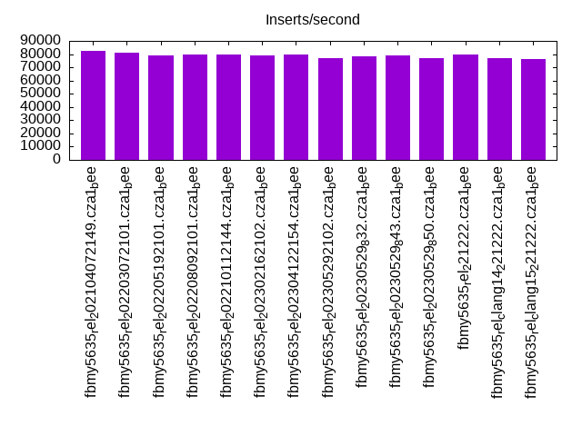
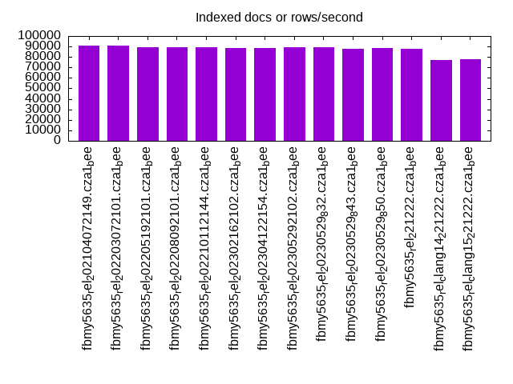
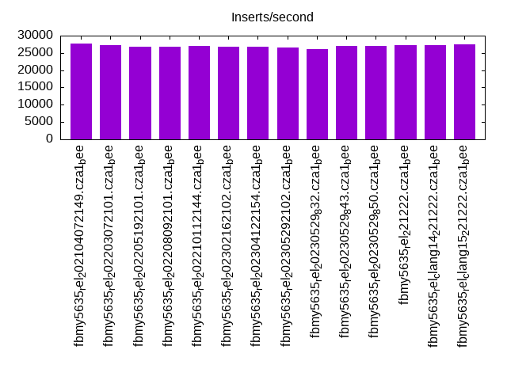
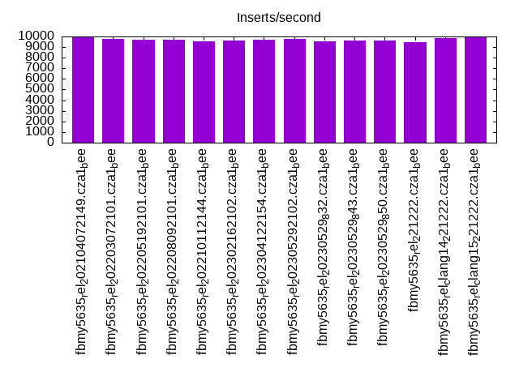
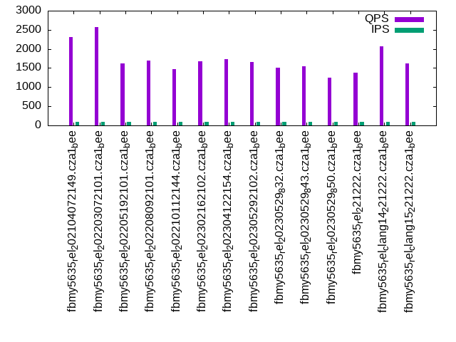
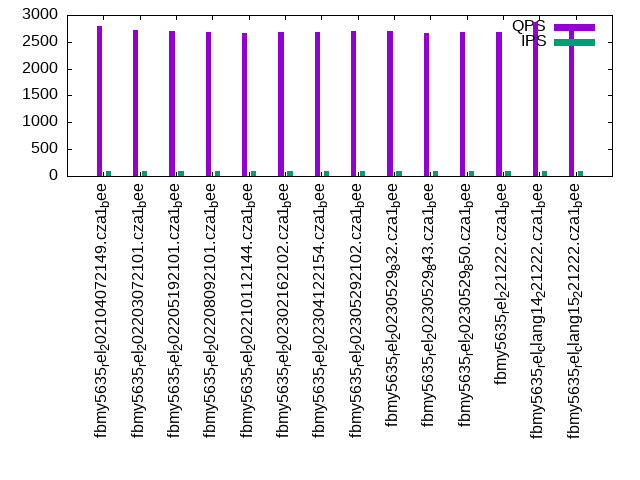
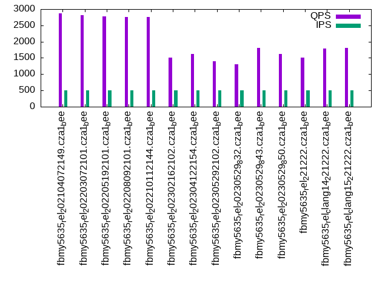
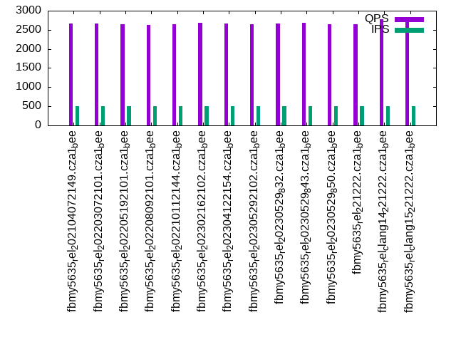
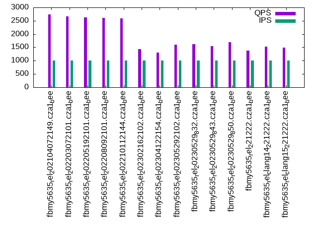
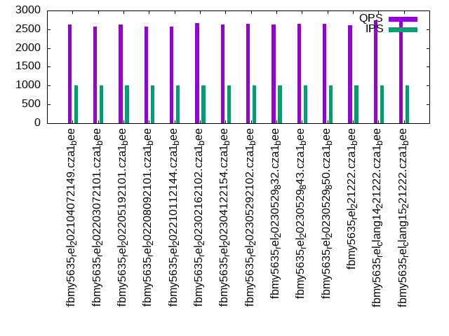

This is a report for the insert benchmark with 20M docs and 1 client(s). It is generated by scripts (bash, awk, sed) and Tufte might not be impressed. An overview of the insert benchmark is here and a short update is here. Below, by DBMS, I mean DBMS+version.config. An example is my8020.c10b40 where my means MySQL, 8020 is version 8.0.20 and c10b40 is the name for the configuration file.
The test server has 8 AMD cores, 16G RAM and an NVMe SSD. It is described here as the Beelink. The benchmark was run with 1 client and there were 1 or 3 connections per client (1 for queries or inserts without rate limits, 1+1 for rate limited inserts+deletes). It uses 1 table. It loads 20M rows per table without secondary indexes, creates 3 secondary indexes per table, then inserts 50m+50m rows per table with a delete per insert to avoid growing the table. It then does 6 read+write tests for 1800s each that do queries as fast as possible with 100,100,500,500,1000,1000 inserts/s and the same for deletes/s per client concurrent with the queries. The database is cached in memory. Clients and the DBMS share one server. The per-database configs are in the per-database subdirectories here.
The tested DBMS are:
The numbers are inserts/s for l.i0, l.i1 and l.i2, indexed docs (or rows) /s for l.x and queries/s for qr100, qp100 thru qr1000, qp1000" The values are the average rate over the entire test for inserts (IPS) and queries (QPS). The range of values for IPS and QPS is split into 3 parts: bottom 25%, middle 50%, top 25%. Values in the bottom 25% have a red background, values in the top 25% have a green background and values in the middle have no color. A gray background is used for values that can be ignored because the DBMS did not sustain the target insert rate. Red backgrounds are not used when the minimum value is within 80% of the max value.
| dbms | l.i0 | l.x | l.i1 | l.i2 | qr100 | qp100 | qr500 | qp500 | qr1000 | qp1000 |
|---|---|---|---|---|---|---|---|---|---|---|
| fbmy5635_rel_202104072149.cza1_bee | 82645 | 90498 | 27720 | 9940 | 2311 | 2804 | 2863 | 2664 | 2732 | 2624 |
| fbmy5635_rel_202203072101.cza1_bee | 81301 | 90498 | 27304 | 9737 | 2570 | 2721 | 2819 | 2667 | 2673 | 2571 |
| fbmy5635_rel_202205192101.cza1_bee | 79051 | 89286 | 26720 | 9699 | 1621 | 2710 | 2777 | 2646 | 2634 | 2624 |
| fbmy5635_rel_202208092101.cza1_bee | 79681 | 89286 | 26846 | 9690 | 1704 | 2681 | 2755 | 2633 | 2618 | 2569 |
| fbmy5635_rel_202210112144.cza1_bee | 80000 | 89286 | 26954 | 9515 | 1465 | 2670 | 2758 | 2651 | 2598 | 2576 |
| fbmy5635_rel_202302162102.cza1_bee | 79051 | 88889 | 26846 | 9643 | 1673 | 2687 | 1503 | 2685 | 1441 | 2658 |
| fbmy5635_rel_202304122154.cza1_bee | 79365 | 88889 | 26738 | 9699 | 1741 | 2688 | 1617 | 2657 | 1306 | 2634 |
| fbmy5635_rel_202305292102.cza1_bee | 77220 | 89686 | 26472 | 9775 | 1665 | 2697 | 1404 | 2654 | 1594 | 2642 |
| fbmy5635_rel_20230529_832.cza1_bee | 78125 | 89286 | 26144 | 9560 | 1518 | 2696 | 1309 | 2672 | 1612 | 2628 |
| fbmy5635_rel_20230529_843.cza1_bee | 79051 | 88106 | 26972 | 9588 | 1545 | 2671 | 1804 | 2677 | 1543 | 2640 |
| fbmy5635_rel_20230529_850.cza1_bee | 76923 | 88496 | 26972 | 9597 | 1244 | 2682 | 1624 | 2650 | 1699 | 2644 |
| fbmy5635_rel_221222.cza1_bee | 79681 | 87720 | 27211 | 9497 | 1370 | 2678 | 1511 | 2637 | 1384 | 2608 |
| fbmy5635_rel_clang14_221222.cza1_bee | 76923 | 76923 | 27174 | 9872 | 2070 | 2865 | 1796 | 2776 | 1536 | 2747 |
| fbmy5635_rel_clang15_221222.cza1_bee | 76336 | 77520 | 27454 | 9940 | 1625 | 2831 | 1808 | 2761 | 1489 | 2774 |
This table has relative throughput, throughput for the DBMS relative to the DBMS in the first line, using the absolute throughput from the previous table. Values less than 0.95 have a yellow background. Values greater than 1.05 have a blue background.
| dbms | l.i0 | l.x | l.i1 | l.i2 | qr100 | qp100 | qr500 | qp500 | qr1000 | qp1000 |
|---|---|---|---|---|---|---|---|---|---|---|
| fbmy5635_rel_202104072149.cza1_bee | 1.00 | 1.00 | 1.00 | 1.00 | 1.00 | 1.00 | 1.00 | 1.00 | 1.00 | 1.00 |
| fbmy5635_rel_202203072101.cza1_bee | 0.98 | 1.00 | 0.98 | 0.98 | 1.11 | 0.97 | 0.98 | 1.00 | 0.98 | 0.98 |
| fbmy5635_rel_202205192101.cza1_bee | 0.96 | 0.99 | 0.96 | 0.98 | 0.70 | 0.97 | 0.97 | 0.99 | 0.96 | 1.00 |
| fbmy5635_rel_202208092101.cza1_bee | 0.96 | 0.99 | 0.97 | 0.97 | 0.74 | 0.96 | 0.96 | 0.99 | 0.96 | 0.98 |
| fbmy5635_rel_202210112144.cza1_bee | 0.97 | 0.99 | 0.97 | 0.96 | 0.63 | 0.95 | 0.96 | 1.00 | 0.95 | 0.98 |
| fbmy5635_rel_202302162102.cza1_bee | 0.96 | 0.98 | 0.97 | 0.97 | 0.72 | 0.96 | 0.52 | 1.01 | 0.53 | 1.01 |
| fbmy5635_rel_202304122154.cza1_bee | 0.96 | 0.98 | 0.96 | 0.98 | 0.75 | 0.96 | 0.56 | 1.00 | 0.48 | 1.00 |
| fbmy5635_rel_202305292102.cza1_bee | 0.93 | 0.99 | 0.95 | 0.98 | 0.72 | 0.96 | 0.49 | 1.00 | 0.58 | 1.01 |
| fbmy5635_rel_20230529_832.cza1_bee | 0.95 | 0.99 | 0.94 | 0.96 | 0.66 | 0.96 | 0.46 | 1.00 | 0.59 | 1.00 |
| fbmy5635_rel_20230529_843.cza1_bee | 0.96 | 0.97 | 0.97 | 0.96 | 0.67 | 0.95 | 0.63 | 1.00 | 0.56 | 1.01 |
| fbmy5635_rel_20230529_850.cza1_bee | 0.93 | 0.98 | 0.97 | 0.97 | 0.54 | 0.96 | 0.57 | 0.99 | 0.62 | 1.01 |
| fbmy5635_rel_221222.cza1_bee | 0.96 | 0.97 | 0.98 | 0.96 | 0.59 | 0.96 | 0.53 | 0.99 | 0.51 | 0.99 |
| fbmy5635_rel_clang14_221222.cza1_bee | 0.93 | 0.85 | 0.98 | 0.99 | 0.90 | 1.02 | 0.63 | 1.04 | 0.56 | 1.05 |
| fbmy5635_rel_clang15_221222.cza1_bee | 0.92 | 0.86 | 0.99 | 1.00 | 0.70 | 1.01 | 0.63 | 1.04 | 0.55 | 1.06 |
This lists the average rate of inserts/s for the tests that do inserts concurrent with queries. For such tests the query rate is listed in the table above. The read+write tests are setup so that the insert rate should match the target rate every second. Cells that are not at least 95% of the target have a red background to indicate a failure to satisfy the target.
| dbms | qr100.L1 | qp100.L2 | qr500.L3 | qp500.L4 | qr1000.L5 | qp1000.L6 |
|---|---|---|---|---|---|---|
| fbmy5635_rel_202104072149.cza1_bee | 100 | 100 | 499 | 499 | 997 | 998 |
| fbmy5635_rel_202203072101.cza1_bee | 100 | 100 | 499 | 499 | 997 | 998 |
| fbmy5635_rel_202205192101.cza1_bee | 100 | 100 | 499 | 499 | 997 | 998 |
| fbmy5635_rel_202208092101.cza1_bee | 100 | 100 | 499 | 499 | 998 | 998 |
| fbmy5635_rel_202210112144.cza1_bee | 100 | 100 | 499 | 499 | 998 | 998 |
| fbmy5635_rel_202302162102.cza1_bee | 100 | 100 | 499 | 499 | 998 | 998 |
| fbmy5635_rel_202304122154.cza1_bee | 100 | 100 | 499 | 499 | 997 | 998 |
| fbmy5635_rel_202305292102.cza1_bee | 100 | 100 | 499 | 499 | 998 | 998 |
| fbmy5635_rel_20230529_832.cza1_bee | 100 | 100 | 499 | 499 | 998 | 997 |
| fbmy5635_rel_20230529_843.cza1_bee | 100 | 100 | 498 | 499 | 998 | 998 |
| fbmy5635_rel_20230529_850.cza1_bee | 100 | 100 | 499 | 499 | 998 | 998 |
| fbmy5635_rel_221222.cza1_bee | 100 | 100 | 499 | 499 | 997 | 997 |
| fbmy5635_rel_clang14_221222.cza1_bee | 100 | 100 | 498 | 499 | 998 | 998 |
| fbmy5635_rel_clang15_221222.cza1_bee | 100 | 100 | 499 | 499 | 997 | 998 |
| target | 100 | 100 | 500 | 500 | 1000 | 1000 |
l.i0: load without secondary indexes. Graphs for performance per 1-second interval are here.
Average throughput:
Insert response time histogram: each cell has the percentage of responses that take <= the time in the header and max is the max response time in seconds. For the max column values in the top 25% of the range have a red background and in the bottom 25% of the range have a green background. The red background is not used when the min value is within 80% of the max value.
| dbms | 256us | 1ms | 4ms | 16ms | 64ms | 256ms | 1s | 4s | 16s | gt | max |
|---|---|---|---|---|---|---|---|---|---|---|---|
| fbmy5635_rel_202104072149.cza1_bee | 0.074 | 99.803 | 0.120 | 0.003 | 0.001 | 0.102 | |||||
| fbmy5635_rel_202203072101.cza1_bee | 0.002 | 99.872 | 0.121 | 0.003 | 0.002 | 0.099 | |||||
| fbmy5635_rel_202205192101.cza1_bee | 99.870 | 0.126 | 0.003 | 0.001 | 0.080 | ||||||
| fbmy5635_rel_202208092101.cza1_bee | 99.871 | 0.124 | 0.003 | 0.002 | 0.104 | ||||||
| fbmy5635_rel_202210112144.cza1_bee | 99.872 | 0.124 | 0.003 | 0.002 | 0.106 | ||||||
| fbmy5635_rel_202302162102.cza1_bee | 99.871 | 0.126 | 0.003 | 0.001 | 0.097 | ||||||
| fbmy5635_rel_202304122154.cza1_bee | 99.870 | 0.126 | 0.003 | 0.001 | 0.097 | ||||||
| fbmy5635_rel_202305292102.cza1_bee | 99.867 | 0.128 | 0.005 | 0.058 | |||||||
| fbmy5635_rel_20230529_832.cza1_bee | 99.869 | 0.127 | 0.003 | 0.001 | 0.102 | ||||||
| fbmy5635_rel_20230529_843.cza1_bee | 99.870 | 0.127 | 0.004 | 0.057 | |||||||
| fbmy5635_rel_20230529_850.cza1_bee | 99.866 | 0.130 | 0.003 | 0.001 | 0.084 | ||||||
| fbmy5635_rel_221222.cza1_bee | 99.870 | 0.126 | 0.003 | 0.001 | 0.097 | ||||||
| fbmy5635_rel_clang14_221222.cza1_bee | 99.867 | 0.129 | 0.003 | 0.063 | |||||||
| fbmy5635_rel_clang15_221222.cza1_bee | 99.867 | 0.128 | 0.005 | 0.058 |
Performance metrics for the DBMS listed above. Some are normalized by throughput, others are not. Legend for results is here.
ips qps rps rmbps wps wmbps rpq rkbpq wpi wkbpi csps cpups cspq cpupq dbgb1 dbgb2 rss maxop p50 p99 tag 82645 0 0 0.0 37.5 13.9 0.000 0.000 0.000 0.172 8042 22.5 0.097 22 0.7 1.7 0.2 0.102 83705 74067 fbmy5635_rel_202104072149.cza1_bee 81301 0 0 0.0 36.7 13.6 0.000 0.000 0.000 0.172 7934 22.3 0.098 22 0.7 1.7 0.2 0.099 82019 74025 fbmy5635_rel_202203072101.cza1_bee 79051 0 0 0.0 35.9 13.2 0.000 0.000 0.000 0.171 7730 22.3 0.098 23 0.7 1.7 0.2 0.080 80113 73026 fbmy5635_rel_202205192101.cza1_bee 79681 0 0 0.0 38.0 13.4 0.000 0.000 0.000 0.172 7784 22.2 0.098 22 0.7 1.7 0.2 0.104 80609 71817 fbmy5635_rel_202208092101.cza1_bee 80000 0 0 0.0 38.4 13.4 0.000 0.000 0.000 0.172 7837 22.4 0.098 22 0.7 1.7 0.2 0.106 80893 70969 fbmy5635_rel_202210112144.cza1_bee 79051 0 0 0.0 36.0 13.3 0.000 0.000 0.000 0.172 7751 22.5 0.098 23 0.7 1.7 0.2 0.097 79980 73216 fbmy5635_rel_202302162102.cza1_bee 79365 0 0 0.0 36.0 13.2 0.000 0.000 0.000 0.170 7746 22.5 0.098 23 0.7 1.7 0.2 0.097 79749 72901 fbmy5635_rel_202304122154.cza1_bee 77220 0 0 0.0 35.6 12.9 0.000 0.000 0.000 0.172 7572 22.6 0.098 23 0.7 1.7 0.2 0.058 78145 70923 fbmy5635_rel_202305292102.cza1_bee 78125 0 0 0.0 36.0 13.1 0.000 0.000 0.000 0.172 7650 22.5 0.098 23 0.7 1.7 0.2 0.102 79011 72020 fbmy5635_rel_20230529_832.cza1_bee 79051 0 0 0.0 36.2 13.2 0.000 0.000 0.000 0.171 7720 22.5 0.098 23 0.7 1.7 0.2 0.057 80038 71339 fbmy5635_rel_20230529_843.cza1_bee 76923 0 0 0.0 37.2 12.9 0.000 0.000 0.000 0.172 7578 22.6 0.099 24 0.7 1.7 0.2 0.084 77879 69255 fbmy5635_rel_20230529_850.cza1_bee 79681 0 0 0.0 36.8 13.4 0.000 0.000 0.000 0.172 7762 22.4 0.097 22 0.7 1.7 0.2 0.097 80292 72419 fbmy5635_rel_221222.cza1_bee 76923 0 0 0.0 35.3 12.9 0.000 0.000 0.000 0.172 7543 22.7 0.098 24 0.7 1.7 0.2 0.063 77964 69324 fbmy5635_rel_clang14_221222.cza1_bee 76336 0 0 0.0 35.2 12.8 0.000 0.000 0.000 0.172 7496 22.7 0.098 24 0.7 1.7 0.2 0.058 77315 69226 fbmy5635_rel_clang15_221222.cza1_bee
l.x: create secondary indexes.
Average throughput:
Performance metrics for the DBMS listed above. Some are normalized by throughput, others are not. Legend for results is here.
ips qps rps rmbps wps wmbps rpq rkbpq wpi wkbpi csps cpups cspq cpupq dbgb1 dbgb2 rss maxop p50 p99 tag 90498 0 0 0.0 36.1 14.0 0.000 0.000 0.000 0.159 220 11.5 0.002 10 1.4 2.5 1.5 0.002 NA NA fbmy5635_rel_202104072149.cza1_bee 90498 0 0 0.0 35.5 14.0 0.000 0.000 0.000 0.159 222 11.6 0.002 10 1.4 2.5 1.6 0.002 NA NA fbmy5635_rel_202203072101.cza1_bee 89286 0 0 0.0 35.0 13.8 0.000 0.000 0.000 0.158 187 11.6 0.002 10 1.4 2.5 1.5 0.002 NA NA fbmy5635_rel_202205192101.cza1_bee 89286 0 0 0.0 36.8 13.8 0.000 0.000 0.000 0.158 288 11.7 0.003 10 1.4 2.5 1.5 0.002 NA NA fbmy5635_rel_202208092101.cza1_bee 89286 0 0 0.0 37.2 13.7 0.000 0.000 0.000 0.157 275 11.6 0.003 10 1.4 2.5 1.5 0.002 NA NA fbmy5635_rel_202210112144.cza1_bee 88889 0 0 0.0 35.2 13.8 0.000 0.000 0.000 0.159 215 11.7 0.002 11 1.4 2.5 1.6 0.002 NA NA fbmy5635_rel_202302162102.cza1_bee 88889 0 0 0.0 34.6 13.7 0.000 0.000 0.000 0.158 229 11.7 0.003 11 1.4 2.5 1.5 0.002 NA NA fbmy5635_rel_202304122154.cza1_bee 89686 0 0 0.0 35.1 13.8 0.000 0.000 0.000 0.158 205 11.7 0.002 10 1.4 2.5 1.5 0.002 NA NA fbmy5635_rel_202305292102.cza1_bee 89286 0 0 0.0 35.6 13.7 0.000 0.000 0.000 0.157 197 11.7 0.002 10 1.4 2.5 1.5 0.002 NA NA fbmy5635_rel_20230529_832.cza1_bee 88106 0 0 0.0 35.1 13.7 0.000 0.000 0.000 0.159 215 11.7 0.002 11 1.4 2.5 1.5 0.002 NA NA fbmy5635_rel_20230529_843.cza1_bee 88496 0 0 0.0 35.3 13.7 0.000 0.000 0.000 0.159 237 11.7 0.003 11 1.4 2.5 1.5 0.002 NA NA fbmy5635_rel_20230529_850.cza1_bee 87720 0 0 0.0 34.8 13.6 0.000 0.000 0.000 0.158 202 11.8 0.002 11 1.4 2.5 1.5 0.002 NA NA fbmy5635_rel_221222.cza1_bee 76923 0 0 0.0 30.6 11.9 0.000 0.000 0.000 0.158 219 11.8 0.003 12 1.4 2.5 1.5 0.002 NA NA fbmy5635_rel_clang14_221222.cza1_bee 77520 0 0 0.0 30.5 12.0 0.000 0.000 0.000 0.158 177 11.7 0.002 12 1.4 2.5 1.5 0.002 NA NA fbmy5635_rel_clang15_221222.cza1_bee
l.i1: continue load after secondary indexes created with 50 inserts per transaction. Graphs for performance per 1-second interval are here.
Average throughput:
Insert response time histogram: each cell has the percentage of responses that take <= the time in the header and max is the max response time in seconds. For the max column values in the top 25% of the range have a red background and in the bottom 25% of the range have a green background. The red background is not used when the min value is within 80% of the max value.
| dbms | 256us | 1ms | 4ms | 16ms | 64ms | 256ms | 1s | 4s | 16s | gt | max |
|---|---|---|---|---|---|---|---|---|---|---|---|
| fbmy5635_rel_202104072149.cza1_bee | 99.816 | 0.179 | 0.004 | 0.001 | 0.078 | ||||||
| fbmy5635_rel_202203072101.cza1_bee | 99.812 | 0.181 | 0.005 | 0.002 | 0.088 | ||||||
| fbmy5635_rel_202205192101.cza1_bee | 99.809 | 0.186 | 0.003 | 0.002 | 0.078 | ||||||
| fbmy5635_rel_202208092101.cza1_bee | 99.809 | 0.185 | 0.002 | 0.003 | 0.077 | ||||||
| fbmy5635_rel_202210112144.cza1_bee | 99.809 | 0.185 | 0.002 | 0.003 | 0.076 | ||||||
| fbmy5635_rel_202302162102.cza1_bee | 99.810 | 0.184 | 0.003 | 0.002 | 0.081 | ||||||
| fbmy5635_rel_202304122154.cza1_bee | 99.809 | 0.185 | 0.004 | 0.002 | 0.076 | ||||||
| fbmy5635_rel_202305292102.cza1_bee | 99.807 | 0.188 | 0.003 | 0.002 | 0.073 | ||||||
| fbmy5635_rel_20230529_832.cza1_bee | 99.804 | 0.190 | 0.003 | 0.002 | 0.088 | ||||||
| fbmy5635_rel_20230529_843.cza1_bee | 99.810 | 0.185 | 0.003 | 0.002 | 0.076 | ||||||
| fbmy5635_rel_20230529_850.cza1_bee | 99.809 | 0.185 | 0.003 | 0.002 | 0.070 | ||||||
| fbmy5635_rel_221222.cza1_bee | 99.812 | 0.183 | 0.003 | 0.002 | 0.080 | ||||||
| fbmy5635_rel_clang14_221222.cza1_bee | 99.810 | 0.184 | 0.005 | 0.001 | 0.079 | ||||||
| fbmy5635_rel_clang15_221222.cza1_bee | 99.813 | 0.182 | 0.003 | 0.002 | 0.074 |
Delete response time histogram: each cell has the percentage of responses that take <= the time in the header and max is the max response time in seconds. For the max column values in the top 25% of the range have a red background and in the bottom 25% of the range have a green background. The red background is not used when the min value is within 80% of the max value.
| dbms | 256us | 1ms | 4ms | 16ms | 64ms | 256ms | 1s | 4s | 16s | gt | max |
|---|---|---|---|---|---|---|---|---|---|---|---|
| fbmy5635_rel_202104072149.cza1_bee | 99.807 | 0.181 | 0.010 | 0.001 | 0.078 | ||||||
| fbmy5635_rel_202203072101.cza1_bee | 99.805 | 0.184 | 0.010 | 0.002 | 0.088 | ||||||
| fbmy5635_rel_202205192101.cza1_bee | 99.802 | 0.188 | 0.007 | 0.003 | 0.077 | ||||||
| fbmy5635_rel_202208092101.cza1_bee | 99.802 | 0.187 | 0.008 | 0.003 | 0.078 | ||||||
| fbmy5635_rel_202210112144.cza1_bee | 99.804 | 0.185 | 0.007 | 0.003 | 0.076 | ||||||
| fbmy5635_rel_202302162102.cza1_bee | 99.802 | 0.188 | 0.008 | 0.002 | 0.081 | ||||||
| fbmy5635_rel_202304122154.cza1_bee | 99.802 | 0.188 | 0.008 | 0.002 | 0.076 | ||||||
| fbmy5635_rel_202305292102.cza1_bee | 99.801 | 0.190 | 0.006 | 0.003 | 0.074 | ||||||
| fbmy5635_rel_20230529_832.cza1_bee | 99.799 | 0.192 | 0.007 | 0.003 | 0.088 | ||||||
| fbmy5635_rel_20230529_843.cza1_bee | 99.799 | 0.190 | 0.009 | 0.002 | 0.076 | ||||||
| fbmy5635_rel_20230529_850.cza1_bee | 99.796 | 0.192 | 0.009 | 0.002 | 0.070 | ||||||
| fbmy5635_rel_221222.cza1_bee | 99.801 | 0.187 | 0.010 | 0.002 | 0.080 | ||||||
| fbmy5635_rel_clang14_221222.cza1_bee | 99.799 | 0.190 | 0.009 | 0.001 | 0.078 | ||||||
| fbmy5635_rel_clang15_221222.cza1_bee | 99.802 | 0.186 | 0.010 | 0.002 | 0.074 |
Performance metrics for the DBMS listed above. Some are normalized by throughput, others are not. Legend for results is here.
ips qps rps rmbps wps wmbps rpq rkbpq wpi wkbpi csps cpups cspq cpupq dbgb1 dbgb2 rss maxop p50 p99 tag 27720 0 4 0.5 131.5 52.0 0.000 0.019 0.005 1.920 11885 47.7 0.429 138 2.0 3.9 5.3 0.078 27770 24671 fbmy5635_rel_202104072149.cza1_bee 27304 0 4 0.5 124.4 49.2 0.000 0.019 0.005 1.844 11605 47.5 0.425 139 2.1 4.1 5.1 0.088 27320 24333 fbmy5635_rel_202203072101.cza1_bee 26720 0 4 0.5 124.0 49.1 0.000 0.019 0.005 1.882 11424 47.1 0.428 141 2.0 3.9 5.2 0.078 26720 23872 fbmy5635_rel_202205192101.cza1_bee 26846 0 4 0.5 125.3 48.9 0.000 0.019 0.005 1.865 11418 47.3 0.425 141 1.9 3.8 5.2 0.077 26821 24073 fbmy5635_rel_202208092101.cza1_bee 26954 0 4 0.5 126.0 48.9 0.000 0.019 0.005 1.858 11410 47.2 0.423 140 1.8 3.7 5.2 0.076 26919 24074 fbmy5635_rel_202210112144.cza1_bee 26846 0 4 0.5 104.9 41.5 0.000 0.019 0.004 1.581 11330 44.0 0.422 131 2.0 3.9 4.6 0.081 26819 24273 fbmy5635_rel_202302162102.cza1_bee 26738 0 4 0.5 108.2 42.7 0.000 0.019 0.004 1.635 11254 44.1 0.421 132 2.7 4.6 4.8 0.076 26670 24323 fbmy5635_rel_202304122154.cza1_bee 26472 0 4 0.5 107.0 42.3 0.000 0.019 0.004 1.637 11163 44.2 0.422 134 2.5 4.4 4.9 0.073 26371 23774 fbmy5635_rel_202305292102.cza1_bee 26144 0 4 0.5 105.4 41.7 0.000 0.019 0.004 1.632 10995 44.1 0.421 135 2.0 3.9 4.8 0.088 26022 23355 fbmy5635_rel_20230529_832.cza1_bee 26972 0 4 0.5 111.9 44.3 0.000 0.019 0.004 1.682 11321 47.7 0.420 141 1.6 3.6 4.7 0.076 26932 24322 fbmy5635_rel_20230529_843.cza1_bee 26972 0 4 0.5 114.9 45.8 0.000 0.019 0.004 1.737 11420 47.1 0.423 140 1.6 3.6 4.8 0.070 26921 24024 fbmy5635_rel_20230529_850.cza1_bee 27211 0 91 0.5 115.8 45.9 0.003 0.019 0.004 1.728 11722 47.4 0.431 139 1.8 3.8 4.7 0.080 27185 24323 fbmy5635_rel_221222.cza1_bee 27174 0 90 0.5 114.4 45.7 0.003 0.019 0.004 1.722 11531 47.8 0.424 141 1.7 3.6 4.9 0.079 27130 24322 fbmy5635_rel_clang14_221222.cza1_bee 27454 0 91 0.5 114.5 45.6 0.003 0.019 0.004 1.702 11683 48.0 0.426 140 1.8 3.7 4.8 0.074 27370 24772 fbmy5635_rel_clang15_221222.cza1_bee
l.i2: continue load after secondary indexes created with 5 inserts per transaction. Graphs for performance per 1-second interval are here.
Average throughput:
Insert response time histogram: each cell has the percentage of responses that take <= the time in the header and max is the max response time in seconds. For the max column values in the top 25% of the range have a red background and in the bottom 25% of the range have a green background. The red background is not used when the min value is within 80% of the max value.
| dbms | 256us | 1ms | 4ms | 16ms | 64ms | 256ms | 1s | 4s | 16s | gt | max |
|---|---|---|---|---|---|---|---|---|---|---|---|
| fbmy5635_rel_202104072149.cza1_bee | 0.061 | 99.876 | 0.012 | 0.050 | 0.001 | nonzero | 0.067 | ||||
| fbmy5635_rel_202203072101.cza1_bee | 0.040 | 99.898 | 0.010 | 0.050 | 0.001 | 0.059 | |||||
| fbmy5635_rel_202205192101.cza1_bee | 0.010 | 99.926 | 0.012 | 0.051 | 0.001 | 0.062 | |||||
| fbmy5635_rel_202208092101.cza1_bee | 0.014 | 99.923 | 0.011 | 0.051 | 0.001 | nonzero | 0.073 | ||||
| fbmy5635_rel_202210112144.cza1_bee | 0.014 | 99.921 | 0.012 | 0.052 | 0.001 | nonzero | 0.070 | ||||
| fbmy5635_rel_202302162102.cza1_bee | 0.025 | 99.912 | 0.010 | 0.051 | 0.001 | nonzero | 0.075 | ||||
| fbmy5635_rel_202304122154.cza1_bee | 0.016 | 99.923 | 0.010 | 0.051 | 0.001 | nonzero | 0.088 | ||||
| fbmy5635_rel_202305292102.cza1_bee | 0.023 | 99.916 | 0.009 | 0.051 | 0.001 | 0.061 | |||||
| fbmy5635_rel_20230529_832.cza1_bee | 0.011 | 99.925 | 0.011 | 0.052 | 0.001 | 0.062 | |||||
| fbmy5635_rel_20230529_843.cza1_bee | 0.016 | 99.916 | 0.015 | 0.052 | 0.001 | nonzero | 0.065 | ||||
| fbmy5635_rel_20230529_850.cza1_bee | 0.014 | 99.916 | 0.017 | 0.052 | 0.001 | nonzero | 0.067 | ||||
| fbmy5635_rel_221222.cza1_bee | 0.006 | 99.926 | 0.014 | 0.053 | 0.001 | nonzero | 0.066 | ||||
| fbmy5635_rel_clang14_221222.cza1_bee | 0.054 | 99.880 | 0.015 | 0.050 | 0.001 | 0.061 | |||||
| fbmy5635_rel_clang15_221222.cza1_bee | 0.069 | 99.868 | 0.012 | 0.050 | 0.001 | 0.060 |
Delete response time histogram: each cell has the percentage of responses that take <= the time in the header and max is the max response time in seconds. For the max column values in the top 25% of the range have a red background and in the bottom 25% of the range have a green background. The red background is not used when the min value is within 80% of the max value.
| dbms | 256us | 1ms | 4ms | 16ms | 64ms | 256ms | 1s | 4s | 16s | gt | max |
|---|---|---|---|---|---|---|---|---|---|---|---|
| fbmy5635_rel_202104072149.cza1_bee | 99.937 | 0.011 | 0.050 | 0.001 | nonzero | 0.067 | |||||
| fbmy5635_rel_202203072101.cza1_bee | 99.938 | 0.010 | 0.051 | 0.001 | nonzero | 0.106 | |||||
| fbmy5635_rel_202205192101.cza1_bee | 99.940 | 0.008 | 0.051 | 0.001 | 0.062 | ||||||
| fbmy5635_rel_202208092101.cza1_bee | 99.940 | 0.008 | 0.051 | 0.001 | nonzero | 0.075 | |||||
| fbmy5635_rel_202210112144.cza1_bee | 99.936 | 0.010 | 0.052 | 0.001 | nonzero | 0.092 | |||||
| fbmy5635_rel_202302162102.cza1_bee | 99.940 | 0.007 | 0.052 | 0.001 | nonzero | 0.075 | |||||
| fbmy5635_rel_202304122154.cza1_bee | 99.939 | 0.009 | 0.051 | 0.001 | nonzero | 0.088 | |||||
| fbmy5635_rel_202305292102.cza1_bee | 99.941 | 0.007 | 0.051 | 0.001 | 0.061 | ||||||
| fbmy5635_rel_20230529_832.cza1_bee | 99.937 | 0.009 | 0.053 | 0.001 | 0.062 | ||||||
| fbmy5635_rel_20230529_843.cza1_bee | 99.932 | 0.014 | 0.053 | 0.001 | nonzero | 0.064 | |||||
| fbmy5635_rel_20230529_850.cza1_bee | 99.932 | 0.014 | 0.053 | 0.001 | nonzero | 0.067 | |||||
| fbmy5635_rel_221222.cza1_bee | 99.932 | 0.014 | 0.053 | 0.001 | nonzero | 0.066 | |||||
| fbmy5635_rel_clang14_221222.cza1_bee | 99.936 | 0.012 | 0.051 | 0.001 | 0.061 | ||||||
| fbmy5635_rel_clang15_221222.cza1_bee | 99.936 | 0.012 | 0.051 | 0.001 | 0.060 |
Performance metrics for the DBMS listed above. Some are normalized by throughput, others are not. Legend for results is here.
ips qps rps rmbps wps wmbps rpq rkbpq wpi wkbpi csps cpups cspq cpupq dbgb1 dbgb2 rss maxop p50 p99 tag 9940 0 0 0.0 98.9 36.2 0.000 0.000 0.010 3.728 40914 42.7 4.116 344 2.1 2.2 6.5 0.067 9863 8311 fbmy5635_rel_202104072149.cza1_bee 9737 0 0 0.0 94.0 34.1 0.000 0.000 0.010 3.584 40077 42.5 4.116 349 1.6 1.7 6.4 0.059 9629 7919 fbmy5635_rel_202203072101.cza1_bee 9699 0 0 0.0 93.5 33.8 0.000 0.000 0.010 3.571 39959 42.5 4.120 351 1.6 1.6 6.4 0.062 9626 7986 fbmy5635_rel_202205192101.cza1_bee 9690 0 0 0.0 95.8 33.7 0.000 0.000 0.010 3.565 39994 42.5 4.127 351 2.5 2.5 6.5 0.073 9584 7996 fbmy5635_rel_202208092101.cza1_bee 9515 0 0 0.0 99.5 35.3 0.000 0.000 0.010 3.800 39250 42.7 4.125 359 1.6 1.6 6.6 0.070 9445 8106 fbmy5635_rel_202210112144.cza1_bee 9643 0 0 0.0 90.6 32.7 0.000 0.000 0.009 3.470 39916 41.6 4.139 345 1.7 1.7 6.4 0.075 9580 7784 fbmy5635_rel_202302162102.cza1_bee 9699 0 0 0.0 91.9 32.8 0.000 0.000 0.009 3.462 40098 41.5 4.134 342 1.6 1.7 6.6 0.088 9604 7857 fbmy5635_rel_202304122154.cza1_bee 9775 0 0 0.0 88.5 31.4 0.000 0.000 0.009 3.292 40353 41.6 4.128 340 1.7 1.8 6.7 0.061 9639 8034 fbmy5635_rel_202305292102.cza1_bee 9560 0 0 0.0 89.1 31.5 0.000 0.000 0.009 3.374 39499 41.5 4.132 347 1.7 1.7 6.5 0.062 9520 7946 fbmy5635_rel_20230529_832.cza1_bee 9588 0 0 0.0 106.7 39.4 0.000 0.000 0.011 4.212 39658 45.9 4.136 383 1.7 1.7 6.7 0.065 9539 8041 fbmy5635_rel_20230529_843.cza1_bee 9597 0 0 0.0 111.6 41.6 0.000 0.000 0.012 4.444 39552 45.4 4.121 378 1.5 1.5 6.9 0.067 9525 8131 fbmy5635_rel_20230529_850.cza1_bee 9497 0 0 0.0 110.7 41.1 0.000 0.000 0.012 4.434 38901 45.1 4.096 380 1.5 1.6 7.0 0.066 9345 7906 fbmy5635_rel_221222.cza1_bee 9872 0 0 0.0 112.4 41.9 0.000 0.000 0.011 4.341 40293 46.5 4.082 377 1.6 1.6 6.9 0.061 9909 8291 fbmy5635_rel_clang14_221222.cza1_bee 9940 0 0 0.0 111.3 41.3 0.000 0.000 0.011 4.253 40668 46.2 4.091 372 1.6 1.7 6.9 0.060 9979 8471 fbmy5635_rel_clang15_221222.cza1_bee
qr100.L1: range queries with 100 insert/s per client. Graphs for performance per 1-second interval are here.
Average throughput:
Query response time histogram: each cell has the percentage of responses that take <= the time in the header and max is the max response time in seconds. For max values in the top 25% of the range have a red background and in the bottom 25% of the range have a green background. The red background is not used when the min value is within 80% of the max value.
| dbms | 256us | 1ms | 4ms | 16ms | 64ms | 256ms | 1s | 4s | 16s | gt | max |
|---|---|---|---|---|---|---|---|---|---|---|---|
| fbmy5635_rel_202104072149.cza1_bee | 26.755 | 65.057 | 8.185 | 0.003 | nonzero | nonzero | 0.154 | ||||
| fbmy5635_rel_202203072101.cza1_bee | 17.812 | 81.066 | 0.914 | 0.208 | 0.008 | ||||||
| fbmy5635_rel_202205192101.cza1_bee | 19.256 | 64.326 | 16.409 | 0.009 | nonzero | nonzero | 0.138 | ||||
| fbmy5635_rel_202208092101.cza1_bee | 18.051 | 59.846 | 22.103 | nonzero | nonzero | 0.141 | |||||
| fbmy5635_rel_202210112144.cza1_bee | 15.001 | 59.980 | 25.018 | 0.001 | nonzero | 0.131 | |||||
| fbmy5635_rel_202302162102.cza1_bee | 18.106 | 60.736 | 21.155 | 0.003 | nonzero | 0.027 | |||||
| fbmy5635_rel_202304122154.cza1_bee | 15.366 | 61.237 | 23.397 | nonzero | nonzero | 0.028 | |||||
| fbmy5635_rel_202305292102.cza1_bee | 15.070 | 59.494 | 25.436 | nonzero | 0.031 | ||||||
| fbmy5635_rel_20230529_832.cza1_bee | 13.713 | 53.829 | 32.458 | nonzero | nonzero | 0.031 | |||||
| fbmy5635_rel_20230529_843.cza1_bee | 15.618 | 74.575 | 9.787 | 0.019 | nonzero | 0.033 | |||||
| fbmy5635_rel_20230529_850.cza1_bee | 12.526 | 66.716 | 20.758 | nonzero | nonzero | 0.033 | |||||
| fbmy5635_rel_221222.cza1_bee | 15.505 | 61.788 | 22.698 | 0.009 | nonzero | 0.018 | |||||
| fbmy5635_rel_clang14_221222.cza1_bee | 13.324 | 80.853 | 5.823 | nonzero | nonzero | 0.023 | |||||
| fbmy5635_rel_clang15_221222.cza1_bee | 15.476 | 69.668 | 14.856 | nonzero | nonzero | 0.032 |
Insert response time histogram: each cell has the percentage of responses that take <= the time in the header and max is the max response time in seconds. For max values in the top 25% of the range have a red background and in the bottom 25% of the range have a green background. The red background is not used when the min value is within 80% of the max value.
| dbms | 256us | 1ms | 4ms | 16ms | 64ms | 256ms | 1s | 4s | 16s | gt | max |
|---|---|---|---|---|---|---|---|---|---|---|---|
| fbmy5635_rel_202104072149.cza1_bee | 99.611 | 0.389 | 0.009 | ||||||||
| fbmy5635_rel_202203072101.cza1_bee | 99.750 | 0.250 | 0.008 | ||||||||
| fbmy5635_rel_202205192101.cza1_bee | 99.778 | 0.222 | 0.009 | ||||||||
| fbmy5635_rel_202208092101.cza1_bee | 99.806 | 0.194 | 0.008 | ||||||||
| fbmy5635_rel_202210112144.cza1_bee | 99.472 | 0.528 | 0.009 | ||||||||
| fbmy5635_rel_202302162102.cza1_bee | 99.806 | 0.194 | 0.007 | ||||||||
| fbmy5635_rel_202304122154.cza1_bee | 99.556 | 0.444 | 0.009 | ||||||||
| fbmy5635_rel_202305292102.cza1_bee | 99.333 | 0.667 | 0.013 | ||||||||
| fbmy5635_rel_20230529_832.cza1_bee | 99.417 | 0.583 | 0.009 | ||||||||
| fbmy5635_rel_20230529_843.cza1_bee | 99.194 | 0.806 | 0.009 | ||||||||
| fbmy5635_rel_20230529_850.cza1_bee | 99.444 | 0.556 | 0.009 | ||||||||
| fbmy5635_rel_221222.cza1_bee | 99.417 | 0.583 | 0.009 | ||||||||
| fbmy5635_rel_clang14_221222.cza1_bee | 99.361 | 0.639 | 0.009 | ||||||||
| fbmy5635_rel_clang15_221222.cza1_bee | 99.694 | 0.306 | 0.009 |
Delete response time histogram: each cell has the percentage of responses that take <= the time in the header and max is the max response time in seconds. For max values in the top 25% of the range have a red background and in the bottom 25% of the range have a green background. The red background is not used when the min value is within 80% of the max value.
| dbms | 256us | 1ms | 4ms | 16ms | 64ms | 256ms | 1s | 4s | 16s | gt | max |
|---|---|---|---|---|---|---|---|---|---|---|---|
| fbmy5635_rel_202104072149.cza1_bee | 99.694 | 0.306 | 0.008 | ||||||||
| fbmy5635_rel_202203072101.cza1_bee | 99.806 | 0.194 | 0.008 | ||||||||
| fbmy5635_rel_202205192101.cza1_bee | 99.778 | 0.222 | 0.008 | ||||||||
| fbmy5635_rel_202208092101.cza1_bee | 99.861 | 0.139 | 0.008 | ||||||||
| fbmy5635_rel_202210112144.cza1_bee | 99.556 | 0.444 | 0.009 | ||||||||
| fbmy5635_rel_202302162102.cza1_bee | 99.806 | 0.194 | 0.006 | ||||||||
| fbmy5635_rel_202304122154.cza1_bee | 99.639 | 0.361 | 0.008 | ||||||||
| fbmy5635_rel_202305292102.cza1_bee | 99.417 | 0.583 | 0.012 | ||||||||
| fbmy5635_rel_20230529_832.cza1_bee | 99.556 | 0.444 | 0.009 | ||||||||
| fbmy5635_rel_20230529_843.cza1_bee | 99.389 | 0.611 | 0.009 | ||||||||
| fbmy5635_rel_20230529_850.cza1_bee | 99.528 | 0.472 | 0.008 | ||||||||
| fbmy5635_rel_221222.cza1_bee | 99.472 | 0.528 | 0.009 | ||||||||
| fbmy5635_rel_clang14_221222.cza1_bee | 99.444 | 0.556 | 0.009 | ||||||||
| fbmy5635_rel_clang15_221222.cza1_bee | 99.722 | 0.278 | 0.008 |
Performance metrics for the DBMS listed above. Some are normalized by throughput, others are not. Legend for results is here.
ips qps rps rmbps wps wmbps rpq rkbpq wpi wkbpi csps cpups cspq cpupq dbgb1 dbgb2 rss maxop p50 p99 tag 100 2311 0 0.0 7.5 1.7 0.000 0.000 0.075 17.227 8985 13.2 3.888 457 1.3 1.3 6.7 0.154 2270 1710 fbmy5635_rel_202104072149.cza1_bee 100 2570 0 0.0 8.0 1.9 0.000 0.000 0.080 19.736 9973 13.4 3.881 417 1.3 1.3 6.5 0.008 2763 1918 fbmy5635_rel_202203072101.cza1_bee 100 1621 0 0.0 7.8 2.0 0.000 0.000 0.079 20.058 6351 13.0 3.917 642 1.3 1.3 6.8 0.138 1646 1022 fbmy5635_rel_202205192101.cza1_bee 100 1704 0 0.0 8.8 1.5 0.000 0.000 0.088 15.019 6672 12.5 3.915 587 1.3 1.3 6.7 0.141 1663 1502 fbmy5635_rel_202208092101.cza1_bee 100 1465 0 0.0 8.8 1.5 0.000 0.000 0.088 15.497 5774 12.5 3.940 682 1.3 1.4 6.8 0.131 1435 1310 fbmy5635_rel_202210112144.cza1_bee 100 1673 0 0.0 4.2 0.4 0.000 0.000 0.042 3.610 6535 11.8 3.906 564 1.5 1.5 6.6 0.027 1678 1518 fbmy5635_rel_202302162102.cza1_bee 100 1741 0 0.0 4.3 0.4 0.000 0.000 0.044 4.386 6794 11.9 3.902 547 1.5 1.6 6.8 0.028 1753 1470 fbmy5635_rel_202304122154.cza1_bee 100 1665 0 0.0 4.4 0.4 0.000 0.000 0.044 4.261 6495 11.8 3.901 567 1.5 1.5 6.8 0.031 1663 1455 fbmy5635_rel_202305292102.cza1_bee 100 1518 0 0.0 4.4 0.4 0.000 0.000 0.044 4.205 5938 11.9 3.911 627 1.5 1.5 6.8 0.031 1518 1405 fbmy5635_rel_20230529_832.cza1_bee 100 1545 0 0.0 4.3 0.4 0.000 0.000 0.043 4.154 6054 11.9 3.918 616 1.5 1.5 6.9 0.033 1547 1390 fbmy5635_rel_20230529_843.cza1_bee 100 1244 0 0.0 4.1 0.4 0.000 0.000 0.041 3.973 4895 12.3 3.936 791 1.5 1.5 7.2 0.033 1247 1134 fbmy5635_rel_20230529_850.cza1_bee 100 1370 0 0.0 4.3 0.4 0.000 0.000 0.044 4.151 5374 12.2 3.924 713 1.5 1.5 7.2 0.018 1517 1008 fbmy5635_rel_221222.cza1_bee 100 2070 0 0.0 4.4 0.4 0.000 0.000 0.044 4.364 8057 12.5 3.892 483 1.5 1.5 7.1 0.023 2221 1582 fbmy5635_rel_clang14_221222.cza1_bee 100 1625 0 0.0 4.4 0.4 0.000 0.000 0.045 4.404 6343 12.5 3.904 615 1.5 1.5 7.1 0.032 1534 1390 fbmy5635_rel_clang15_221222.cza1_bee
qp100.L2: point queries with 100 insert/s per client. Graphs for performance per 1-second interval are here.
Average throughput:
Query response time histogram: each cell has the percentage of responses that take <= the time in the header and max is the max response time in seconds. For max values in the top 25% of the range have a red background and in the bottom 25% of the range have a green background. The red background is not used when the min value is within 80% of the max value.
| dbms | 256us | 1ms | 4ms | 16ms | 64ms | 256ms | 1s | 4s | 16s | gt | max |
|---|---|---|---|---|---|---|---|---|---|---|---|
| fbmy5635_rel_202104072149.cza1_bee | 10.368 | 89.629 | 0.003 | 0.003 | |||||||
| fbmy5635_rel_202203072101.cza1_bee | 8.514 | 91.484 | 0.002 | 0.004 | |||||||
| fbmy5635_rel_202205192101.cza1_bee | 8.827 | 91.169 | 0.004 | 0.003 | |||||||
| fbmy5635_rel_202208092101.cza1_bee | 8.354 | 91.644 | 0.002 | 0.003 | |||||||
| fbmy5635_rel_202210112144.cza1_bee | 8.789 | 91.208 | 0.003 | nonzero | 0.007 | ||||||
| fbmy5635_rel_202302162102.cza1_bee | 6.806 | 93.192 | 0.002 | 0.003 | |||||||
| fbmy5635_rel_202304122154.cza1_bee | 8.214 | 91.784 | 0.003 | 0.002 | |||||||
| fbmy5635_rel_202305292102.cza1_bee | 8.291 | 91.707 | 0.002 | 0.003 | |||||||
| fbmy5635_rel_20230529_832.cza1_bee | 9.007 | 90.991 | 0.002 | 0.003 | |||||||
| fbmy5635_rel_20230529_843.cza1_bee | 8.490 | 91.506 | 0.004 | nonzero | 0.005 | ||||||
| fbmy5635_rel_20230529_850.cza1_bee | 7.727 | 92.270 | 0.003 | 0.003 | |||||||
| fbmy5635_rel_221222.cza1_bee | 7.267 | 92.732 | 0.002 | 0.002 | |||||||
| fbmy5635_rel_clang14_221222.cza1_bee | 12.202 | 87.796 | 0.002 | 0.003 | |||||||
| fbmy5635_rel_clang15_221222.cza1_bee | 6.829 | 93.168 | 0.002 | 0.003 |
Insert response time histogram: each cell has the percentage of responses that take <= the time in the header and max is the max response time in seconds. For max values in the top 25% of the range have a red background and in the bottom 25% of the range have a green background. The red background is not used when the min value is within 80% of the max value.
| dbms | 256us | 1ms | 4ms | 16ms | 64ms | 256ms | 1s | 4s | 16s | gt | max |
|---|---|---|---|---|---|---|---|---|---|---|---|
| fbmy5635_rel_202104072149.cza1_bee | 99.694 | 0.306 | 0.009 | ||||||||
| fbmy5635_rel_202203072101.cza1_bee | 99.417 | 0.583 | 0.009 | ||||||||
| fbmy5635_rel_202205192101.cza1_bee | 99.611 | 0.389 | 0.009 | ||||||||
| fbmy5635_rel_202208092101.cza1_bee | 99.417 | 0.583 | 0.013 | ||||||||
| fbmy5635_rel_202210112144.cza1_bee | 99.722 | 0.278 | 0.008 | ||||||||
| fbmy5635_rel_202302162102.cza1_bee | 99.278 | 0.722 | 0.009 | ||||||||
| fbmy5635_rel_202304122154.cza1_bee | 99.694 | 0.306 | 0.012 | ||||||||
| fbmy5635_rel_202305292102.cza1_bee | 99.806 | 0.194 | 0.009 | ||||||||
| fbmy5635_rel_20230529_832.cza1_bee | 99.667 | 0.333 | 0.009 | ||||||||
| fbmy5635_rel_20230529_843.cza1_bee | 99.500 | 0.500 | 0.010 | ||||||||
| fbmy5635_rel_20230529_850.cza1_bee | 99.750 | 0.250 | 0.008 | ||||||||
| fbmy5635_rel_221222.cza1_bee | 99.889 | 0.111 | 0.006 | ||||||||
| fbmy5635_rel_clang14_221222.cza1_bee | 99.417 | 0.583 | 0.009 | ||||||||
| fbmy5635_rel_clang15_221222.cza1_bee | 99.750 | 0.250 | 0.009 |
Delete response time histogram: each cell has the percentage of responses that take <= the time in the header and max is the max response time in seconds. For max values in the top 25% of the range have a red background and in the bottom 25% of the range have a green background. The red background is not used when the min value is within 80% of the max value.
| dbms | 256us | 1ms | 4ms | 16ms | 64ms | 256ms | 1s | 4s | 16s | gt | max |
|---|---|---|---|---|---|---|---|---|---|---|---|
| fbmy5635_rel_202104072149.cza1_bee | 99.722 | 0.278 | 0.008 | ||||||||
| fbmy5635_rel_202203072101.cza1_bee | 99.528 | 0.472 | 0.008 | ||||||||
| fbmy5635_rel_202205192101.cza1_bee | 99.556 | 0.444 | 0.009 | ||||||||
| fbmy5635_rel_202208092101.cza1_bee | 99.444 | 0.556 | 0.012 | ||||||||
| fbmy5635_rel_202210112144.cza1_bee | 99.778 | 0.222 | 0.008 | ||||||||
| fbmy5635_rel_202302162102.cza1_bee | 99.472 | 0.528 | 0.009 | ||||||||
| fbmy5635_rel_202304122154.cza1_bee | 99.806 | 0.194 | 0.011 | ||||||||
| fbmy5635_rel_202305292102.cza1_bee | 99.889 | 0.111 | 0.008 | ||||||||
| fbmy5635_rel_20230529_832.cza1_bee | 99.750 | 0.250 | 0.008 | ||||||||
| fbmy5635_rel_20230529_843.cza1_bee | 99.556 | 0.444 | 0.009 | ||||||||
| fbmy5635_rel_20230529_850.cza1_bee | 99.750 | 0.250 | 0.008 | ||||||||
| fbmy5635_rel_221222.cza1_bee | 99.917 | 0.083 | 0.006 | ||||||||
| fbmy5635_rel_clang14_221222.cza1_bee | 99.472 | 0.528 | 0.009 | ||||||||
| fbmy5635_rel_clang15_221222.cza1_bee | 99.778 | 0.222 | 0.008 |
Performance metrics for the DBMS listed above. Some are normalized by throughput, others are not. Legend for results is here.
ips qps rps rmbps wps wmbps rpq rkbpq wpi wkbpi csps cpups cspq cpupq dbgb1 dbgb2 rss maxop p50 p99 tag 100 2804 0 0.0 6.4 1.5 0.000 0.000 0.064 15.445 11452 14.0 4.084 399 1.3 1.4 8.6 0.003 2717 2316 fbmy5635_rel_202104072149.cza1_bee 100 2721 0 0.0 6.4 1.5 0.000 0.000 0.064 15.463 11138 14.0 4.094 412 1.3 1.4 8.6 0.004 2649 2349 fbmy5635_rel_202203072101.cza1_bee 100 2710 0 0.0 6.5 1.5 0.000 0.000 0.065 15.546 11071 13.9 4.085 410 1.3 1.4 8.6 0.003 2637 2237 fbmy5635_rel_202205192101.cza1_bee 100 2681 0 0.0 8.5 1.5 0.000 0.000 0.085 15.756 10972 14.2 4.093 424 1.3 1.4 8.6 0.003 2605 2287 fbmy5635_rel_202208092101.cza1_bee 100 2670 0 0.0 8.6 1.6 0.000 0.000 0.087 16.021 10941 13.8 4.097 413 1.3 1.4 8.6 0.007 2591 2187 fbmy5635_rel_202210112144.cza1_bee 100 2687 0 0.0 4.0 0.4 0.000 0.000 0.040 4.026 10960 13.4 4.078 399 1.5 1.6 7.8 0.003 2623 2445 fbmy5635_rel_202302162102.cza1_bee 100 2688 0 0.0 4.1 0.4 0.000 0.000 0.041 4.342 10965 13.5 4.079 402 1.5 1.6 7.8 0.002 2620 2393 fbmy5635_rel_202304122154.cza1_bee 100 2697 0 0.0 3.8 0.3 0.000 0.000 0.038 3.247 11010 13.4 4.082 397 1.5 1.6 7.8 0.003 2621 2430 fbmy5635_rel_202305292102.cza1_bee 100 2696 0 0.0 3.9 0.3 0.000 0.000 0.040 3.395 10990 12.9 4.077 383 1.5 1.6 7.9 0.003 2620 2415 fbmy5635_rel_20230529_832.cza1_bee 100 2671 0 0.0 4.1 0.4 0.000 0.000 0.041 4.150 10907 13.2 4.084 395 1.5 1.6 7.9 0.005 2605 2398 fbmy5635_rel_20230529_843.cza1_bee 100 2682 0 0.0 4.0 0.3 0.000 0.000 0.040 3.527 10947 13.4 4.081 400 1.5 1.6 8.0 0.003 2607 2410 fbmy5635_rel_20230529_850.cza1_bee 100 2678 0 0.0 4.2 0.4 0.000 0.000 0.042 4.106 10935 13.5 4.084 403 1.5 1.6 8.1 0.002 2605 2381 fbmy5635_rel_221222.cza1_bee 100 2865 0 0.0 4.2 0.4 0.000 0.000 0.042 4.122 11705 13.2 4.086 369 1.5 1.6 8.0 0.003 2765 2479 fbmy5635_rel_clang14_221222.cza1_bee 100 2831 0 0.0 4.0 0.3 0.000 0.000 0.040 3.261 11547 13.5 4.079 382 1.5 1.6 8.0 0.003 2780 2573 fbmy5635_rel_clang15_221222.cza1_bee
qr500.L3: range queries with 500 insert/s per client. Graphs for performance per 1-second interval are here.
Average throughput:
Query response time histogram: each cell has the percentage of responses that take <= the time in the header and max is the max response time in seconds. For max values in the top 25% of the range have a red background and in the bottom 25% of the range have a green background. The red background is not used when the min value is within 80% of the max value.
| dbms | 256us | 1ms | 4ms | 16ms | 64ms | 256ms | 1s | 4s | 16s | gt | max |
|---|---|---|---|---|---|---|---|---|---|---|---|
| fbmy5635_rel_202104072149.cza1_bee | 20.097 | 79.902 | 0.001 | nonzero | 0.004 | ||||||
| fbmy5635_rel_202203072101.cza1_bee | 17.509 | 82.490 | 0.001 | 0.003 | |||||||
| fbmy5635_rel_202205192101.cza1_bee | 14.845 | 85.154 | 0.001 | 0.003 | |||||||
| fbmy5635_rel_202208092101.cza1_bee | 13.952 | 86.048 | 0.001 | 0.003 | |||||||
| fbmy5635_rel_202210112144.cza1_bee | 14.101 | 85.898 | 0.001 | 0.003 | |||||||
| fbmy5635_rel_202302162102.cza1_bee | 14.667 | 63.906 | 21.426 | nonzero | nonzero | 0.030 | |||||
| fbmy5635_rel_202304122154.cza1_bee | 15.434 | 63.605 | 20.961 | nonzero | nonzero | 0.031 | |||||
| fbmy5635_rel_202305292102.cza1_bee | 13.599 | 55.408 | 30.992 | nonzero | nonzero | 0.030 | |||||
| fbmy5635_rel_20230529_832.cza1_bee | 12.655 | 58.108 | 29.237 | nonzero | nonzero | 0.030 | |||||
| fbmy5635_rel_20230529_843.cza1_bee | 12.995 | 69.903 | 17.102 | nonzero | nonzero | 0.030 | |||||
| fbmy5635_rel_20230529_850.cza1_bee | 15.410 | 66.925 | 17.664 | 0.001 | nonzero | 0.031 | |||||
| fbmy5635_rel_221222.cza1_bee | 13.694 | 68.785 | 17.519 | 0.001 | nonzero | 0.031 | |||||
| fbmy5635_rel_clang14_221222.cza1_bee | 15.299 | 66.297 | 18.403 | nonzero | nonzero | nonzero | 2.577 | ||||
| fbmy5635_rel_clang15_221222.cza1_bee | 15.332 | 67.101 | 17.567 | nonzero | nonzero | 0.034 |
Insert response time histogram: each cell has the percentage of responses that take <= the time in the header and max is the max response time in seconds. For max values in the top 25% of the range have a red background and in the bottom 25% of the range have a green background. The red background is not used when the min value is within 80% of the max value.
| dbms | 256us | 1ms | 4ms | 16ms | 64ms | 256ms | 1s | 4s | 16s | gt | max |
|---|---|---|---|---|---|---|---|---|---|---|---|
| fbmy5635_rel_202104072149.cza1_bee | 99.650 | 0.350 | 0.009 | ||||||||
| fbmy5635_rel_202203072101.cza1_bee | 99.661 | 0.339 | 0.008 | ||||||||
| fbmy5635_rel_202205192101.cza1_bee | 99.550 | 0.450 | 0.009 | ||||||||
| fbmy5635_rel_202208092101.cza1_bee | 99.561 | 0.439 | 0.009 | ||||||||
| fbmy5635_rel_202210112144.cza1_bee | 99.611 | 0.389 | 0.009 | ||||||||
| fbmy5635_rel_202302162102.cza1_bee | 99.728 | 0.267 | 0.006 | 0.018 | |||||||
| fbmy5635_rel_202304122154.cza1_bee | 99.750 | 0.250 | 0.009 | ||||||||
| fbmy5635_rel_202305292102.cza1_bee | 99.650 | 0.350 | 0.009 | ||||||||
| fbmy5635_rel_20230529_832.cza1_bee | 99.694 | 0.306 | 0.009 | ||||||||
| fbmy5635_rel_20230529_843.cza1_bee | 99.550 | 0.450 | 0.009 | ||||||||
| fbmy5635_rel_20230529_850.cza1_bee | 99.667 | 0.333 | 0.009 | ||||||||
| fbmy5635_rel_221222.cza1_bee | 99.794 | 0.206 | 0.009 | ||||||||
| fbmy5635_rel_clang14_221222.cza1_bee | 99.517 | 0.472 | 0.011 | 2.577 | |||||||
| fbmy5635_rel_clang15_221222.cza1_bee | 99.783 | 0.217 | 0.009 |
Delete response time histogram: each cell has the percentage of responses that take <= the time in the header and max is the max response time in seconds. For max values in the top 25% of the range have a red background and in the bottom 25% of the range have a green background. The red background is not used when the min value is within 80% of the max value.
| dbms | 256us | 1ms | 4ms | 16ms | 64ms | 256ms | 1s | 4s | 16s | gt | max |
|---|---|---|---|---|---|---|---|---|---|---|---|
| fbmy5635_rel_202104072149.cza1_bee | 99.583 | 0.417 | 0.009 | ||||||||
| fbmy5635_rel_202203072101.cza1_bee | 99.611 | 0.389 | 0.010 | ||||||||
| fbmy5635_rel_202205192101.cza1_bee | 99.500 | 0.500 | 0.009 | ||||||||
| fbmy5635_rel_202208092101.cza1_bee | 99.406 | 0.594 | 0.009 | ||||||||
| fbmy5635_rel_202210112144.cza1_bee | 99.511 | 0.489 | 0.009 | ||||||||
| fbmy5635_rel_202302162102.cza1_bee | 99.656 | 0.339 | 0.006 | 0.019 | |||||||
| fbmy5635_rel_202304122154.cza1_bee | 99.750 | 0.250 | 0.009 | ||||||||
| fbmy5635_rel_202305292102.cza1_bee | 99.672 | 0.328 | 0.009 | ||||||||
| fbmy5635_rel_20230529_832.cza1_bee | 99.717 | 0.283 | 0.009 | ||||||||
| fbmy5635_rel_20230529_843.cza1_bee | 99.567 | 0.433 | 0.009 | ||||||||
| fbmy5635_rel_20230529_850.cza1_bee | 99.706 | 0.294 | 0.009 | ||||||||
| fbmy5635_rel_221222.cza1_bee | 99.811 | 0.189 | 0.009 | ||||||||
| fbmy5635_rel_clang14_221222.cza1_bee | 99.578 | 0.411 | 0.011 | 2.577 | |||||||
| fbmy5635_rel_clang15_221222.cza1_bee | 99.794 | 0.206 | 0.008 |
Performance metrics for the DBMS listed above. Some are normalized by throughput, others are not. Legend for results is here.
ips qps rps rmbps wps wmbps rpq rkbpq wpi wkbpi csps cpups cspq cpupq dbgb1 dbgb2 rss maxop p50 p99 tag 499 2863 0 0.0 22.8 9.0 0.000 0.000 0.046 18.425 11281 17.5 3.941 489 1.3 1.6 8.6 0.004 2863 2604 fbmy5635_rel_202104072149.cza1_bee 499 2819 0 0.0 22.4 8.8 0.000 0.000 0.045 18.049 11118 17.6 3.944 500 2.4 2.6 8.6 0.003 2830 2558 fbmy5635_rel_202203072101.cza1_bee 499 2777 0 0.0 22.3 8.8 0.000 0.000 0.045 18.049 10960 17.6 3.947 507 2.4 2.6 8.6 0.003 2781 2526 fbmy5635_rel_202205192101.cza1_bee 499 2755 0 0.0 24.4 8.8 0.000 0.000 0.049 18.054 10888 17.6 3.952 511 2.4 2.6 8.6 0.003 2764 2489 fbmy5635_rel_202208092101.cza1_bee 499 2758 0 0.0 24.5 8.8 0.000 0.000 0.049 18.062 10902 17.6 3.952 510 2.3 2.6 8.6 0.003 2765 2477 fbmy5635_rel_202210112144.cza1_bee 499 1503 0 0.0 8.1 2.2 0.000 0.000 0.016 4.492 6036 13.4 4.016 713 1.5 1.8 8.3 0.030 1518 1215 fbmy5635_rel_202302162102.cza1_bee 499 1617 0 0.0 8.1 2.2 0.000 0.000 0.016 4.514 6449 13.5 3.989 668 1.5 1.8 8.2 0.031 1486 1199 fbmy5635_rel_202304122154.cza1_bee 499 1404 0 0.0 8.5 2.3 0.000 0.000 0.017 4.706 5639 13.4 4.018 764 1.5 1.8 8.3 0.030 1406 1135 fbmy5635_rel_202305292102.cza1_bee 499 1309 0 0.0 8.7 2.3 0.000 0.000 0.017 4.765 5280 13.3 4.035 813 1.5 1.8 8.3 0.030 1311 1103 fbmy5635_rel_20230529_832.cza1_bee 498 1804 0 0.0 8.6 2.3 0.000 0.000 0.017 4.772 7179 13.8 3.980 612 1.5 1.8 8.2 0.030 1763 1454 fbmy5635_rel_20230529_843.cza1_bee 499 1624 0 0.0 8.8 2.5 0.000 0.000 0.018 5.033 6488 13.7 3.996 675 1.5 1.7 8.4 0.031 1630 1087 fbmy5635_rel_20230529_850.cza1_bee 499 1511 0 0.0 8.4 2.2 0.000 0.000 0.017 4.593 6060 13.4 4.011 710 1.5 1.8 8.3 0.031 1485 1248 fbmy5635_rel_221222.cza1_bee 498 1796 0 0.0 8.4 2.2 0.000 0.000 0.017 4.625 7157 13.5 3.985 601 1.5 1.8 8.3 2.577 1758 1438 fbmy5635_rel_clang14_221222.cza1_bee 499 1808 0 0.0 8.6 2.3 0.000 0.000 0.017 4.754 7190 13.6 3.977 602 1.5 1.8 8.3 0.034 1774 1486 fbmy5635_rel_clang15_221222.cza1_bee
qp500.L4: point queries with 500 insert/s per client. Graphs for performance per 1-second interval are here.
Average throughput:
Query response time histogram: each cell has the percentage of responses that take <= the time in the header and max is the max response time in seconds. For max values in the top 25% of the range have a red background and in the bottom 25% of the range have a green background. The red background is not used when the min value is within 80% of the max value.
| dbms | 256us | 1ms | 4ms | 16ms | 64ms | 256ms | 1s | 4s | 16s | gt | max |
|---|---|---|---|---|---|---|---|---|---|---|---|
| fbmy5635_rel_202104072149.cza1_bee | 6.278 | 93.713 | 0.010 | nonzero | 0.011 | ||||||
| fbmy5635_rel_202203072101.cza1_bee | 7.604 | 92.390 | 0.006 | nonzero | 0.014 | ||||||
| fbmy5635_rel_202205192101.cza1_bee | 6.067 | 93.924 | 0.008 | nonzero | nonzero | 0.023 | |||||
| fbmy5635_rel_202208092101.cza1_bee | 6.410 | 93.583 | 0.007 | nonzero | 0.011 | ||||||
| fbmy5635_rel_202210112144.cza1_bee | 7.759 | 92.235 | 0.006 | nonzero | 0.009 | ||||||
| fbmy5635_rel_202302162102.cza1_bee | 7.184 | 92.812 | 0.004 | 0.003 | |||||||
| fbmy5635_rel_202304122154.cza1_bee | 6.144 | 93.852 | 0.004 | nonzero | 0.005 | ||||||
| fbmy5635_rel_202305292102.cza1_bee | 4.227 | 95.771 | 0.002 | nonzero | 0.006 | ||||||
| fbmy5635_rel_20230529_832.cza1_bee | 6.563 | 93.434 | 0.003 | 0.003 | |||||||
| fbmy5635_rel_20230529_843.cza1_bee | 8.813 | 91.183 | 0.004 | nonzero | 0.005 | ||||||
| fbmy5635_rel_20230529_850.cza1_bee | 5.740 | 94.256 | 0.004 | 0.003 | |||||||
| fbmy5635_rel_221222.cza1_bee | 5.533 | 94.464 | 0.003 | nonzero | 0.004 | ||||||
| fbmy5635_rel_clang14_221222.cza1_bee | 6.715 | 93.282 | 0.003 | nonzero | 0.005 | ||||||
| fbmy5635_rel_clang15_221222.cza1_bee | 4.915 | 95.081 | 0.003 | nonzero | 0.006 |
Insert response time histogram: each cell has the percentage of responses that take <= the time in the header and max is the max response time in seconds. For max values in the top 25% of the range have a red background and in the bottom 25% of the range have a green background. The red background is not used when the min value is within 80% of the max value.
| dbms | 256us | 1ms | 4ms | 16ms | 64ms | 256ms | 1s | 4s | 16s | gt | max |
|---|---|---|---|---|---|---|---|---|---|---|---|
| fbmy5635_rel_202104072149.cza1_bee | 99.689 | 0.306 | 0.006 | 0.020 | |||||||
| fbmy5635_rel_202203072101.cza1_bee | 99.550 | 0.444 | 0.006 | 0.024 | |||||||
| fbmy5635_rel_202205192101.cza1_bee | 99.756 | 0.244 | 0.009 | ||||||||
| fbmy5635_rel_202208092101.cza1_bee | 99.528 | 0.472 | 0.012 | ||||||||
| fbmy5635_rel_202210112144.cza1_bee | 99.639 | 0.361 | 0.009 | ||||||||
| fbmy5635_rel_202302162102.cza1_bee | 99.717 | 0.283 | 0.009 | ||||||||
| fbmy5635_rel_202304122154.cza1_bee | 99.728 | 0.272 | 0.009 | ||||||||
| fbmy5635_rel_202305292102.cza1_bee | 99.717 | 0.283 | 0.009 | ||||||||
| fbmy5635_rel_20230529_832.cza1_bee | 99.672 | 0.328 | 0.014 | ||||||||
| fbmy5635_rel_20230529_843.cza1_bee | 99.689 | 0.311 | 0.009 | ||||||||
| fbmy5635_rel_20230529_850.cza1_bee | 99.833 | 0.167 | 0.014 | ||||||||
| fbmy5635_rel_221222.cza1_bee | 99.567 | 0.433 | 0.010 | ||||||||
| fbmy5635_rel_clang14_221222.cza1_bee | 99.817 | 0.183 | 0.008 | ||||||||
| fbmy5635_rel_clang15_221222.cza1_bee | 99.650 | 0.350 | 0.011 |
Delete response time histogram: each cell has the percentage of responses that take <= the time in the header and max is the max response time in seconds. For max values in the top 25% of the range have a red background and in the bottom 25% of the range have a green background. The red background is not used when the min value is within 80% of the max value.
| dbms | 256us | 1ms | 4ms | 16ms | 64ms | 256ms | 1s | 4s | 16s | gt | max |
|---|---|---|---|---|---|---|---|---|---|---|---|
| fbmy5635_rel_202104072149.cza1_bee | 99.683 | 0.311 | 0.006 | 0.164 | |||||||
| fbmy5635_rel_202203072101.cza1_bee | 99.561 | 0.433 | 0.006 | 0.024 | |||||||
| fbmy5635_rel_202205192101.cza1_bee | 99.739 | 0.256 | 0.006 | 0.163 | |||||||
| fbmy5635_rel_202208092101.cza1_bee | 99.522 | 0.478 | 0.011 | ||||||||
| fbmy5635_rel_202210112144.cza1_bee | 99.567 | 0.433 | 0.014 | ||||||||
| fbmy5635_rel_202302162102.cza1_bee | 99.750 | 0.250 | 0.009 | ||||||||
| fbmy5635_rel_202304122154.cza1_bee | 99.733 | 0.267 | 0.009 | ||||||||
| fbmy5635_rel_202305292102.cza1_bee | 99.717 | 0.283 | 0.008 | ||||||||
| fbmy5635_rel_20230529_832.cza1_bee | 99.667 | 0.333 | 0.013 | ||||||||
| fbmy5635_rel_20230529_843.cza1_bee | 99.700 | 0.294 | 0.006 | 0.035 | |||||||
| fbmy5635_rel_20230529_850.cza1_bee | 99.828 | 0.172 | 0.014 | ||||||||
| fbmy5635_rel_221222.cza1_bee | 99.561 | 0.439 | 0.010 | ||||||||
| fbmy5635_rel_clang14_221222.cza1_bee | 99.817 | 0.183 | 0.008 | ||||||||
| fbmy5635_rel_clang15_221222.cza1_bee | 99.689 | 0.311 | 0.011 |
Performance metrics for the DBMS listed above. Some are normalized by throughput, others are not. Legend for results is here.
ips qps rps rmbps wps wmbps rpq rkbpq wpi wkbpi csps cpups cspq cpupq dbgb1 dbgb2 rss maxop p50 p99 tag 499 2664 0 0.0 22.9 9.0 0.000 0.000 0.046 18.471 11066 17.5 4.155 526 1.3 1.8 9.1 0.011 2637 2141 fbmy5635_rel_202104072149.cza1_bee 499 2667 1 0.0 22.3 8.4 0.000 0.001 0.045 17.285 11102 17.6 4.163 528 1.3 1.8 9.2 0.014 2605 2061 fbmy5635_rel_202203072101.cza1_bee 499 2646 3 0.0 22.2 8.4 0.001 0.005 0.045 17.220 11013 18.0 4.163 544 1.3 1.8 9.2 0.023 2604 2109 fbmy5635_rel_202205192101.cza1_bee 499 2633 0 0.0 23.6 8.4 0.000 0.000 0.047 17.231 10980 17.7 4.171 538 1.3 1.8 9.3 0.011 2588 2030 fbmy5635_rel_202208092101.cza1_bee 499 2651 2 0.0 23.9 8.4 0.001 0.003 0.048 17.288 11054 17.9 4.169 540 1.3 1.8 9.2 0.009 2589 2094 fbmy5635_rel_202210112144.cza1_bee 499 2685 0 0.0 8.0 2.2 0.000 0.000 0.016 4.476 11090 14.5 4.131 432 1.5 2.0 8.5 0.003 2621 2413 fbmy5635_rel_202302162102.cza1_bee 499 2657 0 0.0 7.8 2.1 0.000 0.000 0.016 4.395 10972 14.2 4.129 427 1.5 2.0 8.5 0.005 2605 2413 fbmy5635_rel_202304122154.cza1_bee 499 2654 0 0.0 7.9 2.2 0.000 0.000 0.016 4.467 10954 14.9 4.128 449 1.5 2.0 8.6 0.006 2606 2414 fbmy5635_rel_202305292102.cza1_bee 499 2672 0 0.0 7.9 2.2 0.000 0.000 0.016 4.465 11020 14.1 4.124 422 1.5 2.0 8.5 0.003 2620 2429 fbmy5635_rel_20230529_832.cza1_bee 499 2677 0 0.0 7.9 2.2 0.000 0.000 0.016 4.470 11069 14.5 4.135 433 1.5 2.0 8.4 0.005 2590 2412 fbmy5635_rel_20230529_843.cza1_bee 499 2650 0 0.0 7.7 2.1 0.000 0.000 0.015 4.262 10932 14.1 4.125 426 1.5 2.0 8.6 0.003 2605 2413 fbmy5635_rel_20230529_850.cza1_bee 499 2637 0 0.0 7.8 2.2 0.000 0.000 0.016 4.421 10899 14.5 4.133 440 1.5 2.0 8.6 0.004 2589 2397 fbmy5635_rel_221222.cza1_bee 499 2776 0 0.0 8.0 2.2 0.000 0.000 0.016 4.550 11461 14.4 4.129 415 1.5 2.0 8.6 0.005 2731 2493 fbmy5635_rel_clang14_221222.cza1_bee 499 2761 0 0.0 7.9 2.2 0.000 0.000 0.016 4.509 11376 14.4 4.121 417 1.5 2.0 8.7 0.006 2732 2493 fbmy5635_rel_clang15_221222.cza1_bee
qr1000.L5: range queries with 1000 insert/s per client. Graphs for performance per 1-second interval are here.
Average throughput:
Query response time histogram: each cell has the percentage of responses that take <= the time in the header and max is the max response time in seconds. For max values in the top 25% of the range have a red background and in the bottom 25% of the range have a green background. The red background is not used when the min value is within 80% of the max value.
| dbms | 256us | 1ms | 4ms | 16ms | 64ms | 256ms | 1s | 4s | 16s | gt | max |
|---|---|---|---|---|---|---|---|---|---|---|---|
| fbmy5635_rel_202104072149.cza1_bee | 15.945 | 84.053 | 0.002 | nonzero | 0.004 | ||||||
| fbmy5635_rel_202203072101.cza1_bee | 12.397 | 87.601 | 0.003 | nonzero | 0.005 | ||||||
| fbmy5635_rel_202205192101.cza1_bee | 9.694 | 90.304 | 0.002 | nonzero | 0.004 | ||||||
| fbmy5635_rel_202208092101.cza1_bee | 8.226 | 91.773 | 0.002 | nonzero | 0.004 | ||||||
| fbmy5635_rel_202210112144.cza1_bee | 7.081 | 92.916 | 0.003 | nonzero | 0.004 | ||||||
| fbmy5635_rel_202302162102.cza1_bee | 14.307 | 64.141 | 21.550 | 0.001 | nonzero | 0.029 | |||||
| fbmy5635_rel_202304122154.cza1_bee | 12.846 | 62.159 | 24.993 | 0.002 | 0.001 | 0.030 | |||||
| fbmy5635_rel_202305292102.cza1_bee | 14.431 | 63.442 | 22.126 | nonzero | nonzero | 0.030 | |||||
| fbmy5635_rel_20230529_832.cza1_bee | 13.812 | 68.519 | 17.668 | 0.001 | nonzero | 0.030 | |||||
| fbmy5635_rel_20230529_843.cza1_bee | 14.026 | 67.047 | 18.925 | 0.001 | nonzero | 0.030 | |||||
| fbmy5635_rel_20230529_850.cza1_bee | 14.506 | 69.130 | 16.363 | 0.001 | 0.001 | 0.032 | |||||
| fbmy5635_rel_221222.cza1_bee | 12.975 | 64.217 | 22.803 | 0.004 | 0.001 | 0.029 | |||||
| fbmy5635_rel_clang14_221222.cza1_bee | 16.494 | 64.453 | 19.051 | 0.001 | 0.001 | 0.031 | |||||
| fbmy5635_rel_clang15_221222.cza1_bee | 16.041 | 60.549 | 23.409 | nonzero | 0.001 | 0.030 |
Insert response time histogram: each cell has the percentage of responses that take <= the time in the header and max is the max response time in seconds. For max values in the top 25% of the range have a red background and in the bottom 25% of the range have a green background. The red background is not used when the min value is within 80% of the max value.
| dbms | 256us | 1ms | 4ms | 16ms | 64ms | 256ms | 1s | 4s | 16s | gt | max |
|---|---|---|---|---|---|---|---|---|---|---|---|
| fbmy5635_rel_202104072149.cza1_bee | 99.731 | 0.264 | 0.006 | 0.038 | |||||||
| fbmy5635_rel_202203072101.cza1_bee | 99.856 | 0.142 | 0.003 | 0.049 | |||||||
| fbmy5635_rel_202205192101.cza1_bee | 99.689 | 0.308 | 0.003 | 0.047 | |||||||
| fbmy5635_rel_202208092101.cza1_bee | 99.744 | 0.253 | 0.003 | 0.057 | |||||||
| fbmy5635_rel_202210112144.cza1_bee | 99.747 | 0.250 | 0.003 | 0.056 | |||||||
| fbmy5635_rel_202302162102.cza1_bee | 99.656 | 0.342 | 0.003 | 0.041 | |||||||
| fbmy5635_rel_202304122154.cza1_bee | 99.711 | 0.286 | 0.003 | 0.047 | |||||||
| fbmy5635_rel_202305292102.cza1_bee | 99.600 | 0.394 | 0.006 | 0.047 | |||||||
| fbmy5635_rel_20230529_832.cza1_bee | 99.914 | 0.081 | 0.006 | 0.038 | |||||||
| fbmy5635_rel_20230529_843.cza1_bee | 99.681 | 0.317 | 0.003 | 0.052 | |||||||
| fbmy5635_rel_20230529_850.cza1_bee | 99.711 | 0.286 | 0.003 | 0.048 | |||||||
| fbmy5635_rel_221222.cza1_bee | 99.906 | 0.089 | 0.006 | 0.049 | |||||||
| fbmy5635_rel_clang14_221222.cza1_bee | 99.733 | 0.264 | 0.003 | 0.047 | |||||||
| fbmy5635_rel_clang15_221222.cza1_bee | 99.722 | 0.275 | 0.003 | 0.048 |
Delete response time histogram: each cell has the percentage of responses that take <= the time in the header and max is the max response time in seconds. For max values in the top 25% of the range have a red background and in the bottom 25% of the range have a green background. The red background is not used when the min value is within 80% of the max value.
| dbms | 256us | 1ms | 4ms | 16ms | 64ms | 256ms | 1s | 4s | 16s | gt | max |
|---|---|---|---|---|---|---|---|---|---|---|---|
| fbmy5635_rel_202104072149.cza1_bee | 99.639 | 0.356 | 0.006 | 0.039 | |||||||
| fbmy5635_rel_202203072101.cza1_bee | 99.856 | 0.142 | 0.003 | 0.049 | |||||||
| fbmy5635_rel_202205192101.cza1_bee | 99.608 | 0.383 | 0.006 | 0.003 | 0.151 | ||||||
| fbmy5635_rel_202208092101.cza1_bee | 99.750 | 0.244 | 0.003 | 0.003 | 0.154 | ||||||
| fbmy5635_rel_202210112144.cza1_bee | 99.739 | 0.256 | 0.003 | 0.003 | 0.156 | ||||||
| fbmy5635_rel_202302162102.cza1_bee | 99.617 | 0.381 | 0.003 | 0.040 | |||||||
| fbmy5635_rel_202304122154.cza1_bee | 99.667 | 0.322 | 0.011 | 0.048 | |||||||
| fbmy5635_rel_202305292102.cza1_bee | 99.614 | 0.381 | 0.006 | 0.048 | |||||||
| fbmy5635_rel_20230529_832.cza1_bee | 99.914 | 0.081 | 0.006 | 0.039 | |||||||
| fbmy5635_rel_20230529_843.cza1_bee | 99.672 | 0.325 | 0.003 | 0.052 | |||||||
| fbmy5635_rel_20230529_850.cza1_bee | 99.728 | 0.267 | 0.006 | 0.049 | |||||||
| fbmy5635_rel_221222.cza1_bee | 99.894 | 0.100 | 0.006 | 0.048 | |||||||
| fbmy5635_rel_clang14_221222.cza1_bee | 99.733 | 0.264 | 0.003 | 0.048 | |||||||
| fbmy5635_rel_clang15_221222.cza1_bee | 99.717 | 0.278 | 0.006 | 0.049 |
Performance metrics for the DBMS listed above. Some are normalized by throughput, others are not. Legend for results is here.
ips qps rps rmbps wps wmbps rpq rkbpq wpi wkbpi csps cpups cspq cpupq dbgb1 dbgb2 rss maxop p50 p99 tag 997 2732 0 0.0 42.5 17.7 0.000 0.000 0.043 18.220 11104 22.4 4.065 656 2.2 3.0 8.6 0.004 2720 2478 fbmy5635_rel_202104072149.cza1_bee 997 2673 0 0.0 43.5 17.5 0.000 0.000 0.044 17.971 10868 22.7 4.065 679 1.8 2.7 8.9 0.005 2669 2415 fbmy5635_rel_202203072101.cza1_bee 997 2634 0 0.0 43.8 17.5 0.000 0.002 0.044 17.970 10692 23.0 4.060 699 1.8 2.7 8.9 0.004 2622 2397 fbmy5635_rel_202205192101.cza1_bee 998 2618 0 0.0 44.6 17.5 0.000 0.000 0.045 17.967 10661 23.0 4.073 703 1.8 2.6 8.9 0.004 2607 2381 fbmy5635_rel_202208092101.cza1_bee 998 2598 0 0.0 44.5 17.5 0.000 0.000 0.045 17.957 10601 23.0 4.080 708 1.8 2.7 8.7 0.004 2590 2349 fbmy5635_rel_202210112144.cza1_bee 998 1441 0 0.0 12.9 4.5 0.000 0.000 0.013 4.591 6017 15.0 4.175 833 1.5 2.4 8.5 0.029 1438 1103 fbmy5635_rel_202302162102.cza1_bee 997 1306 0 0.0 12.9 4.5 0.000 0.000 0.013 4.601 5490 14.9 4.203 913 1.7 2.5 8.6 0.030 1278 1007 fbmy5635_rel_202304122154.cza1_bee 998 1594 0 0.0 13.3 4.5 0.000 0.000 0.013 4.669 6585 14.9 4.130 748 1.5 2.4 8.6 0.030 1582 1215 fbmy5635_rel_202305292102.cza1_bee 998 1612 0 0.0 13.3 4.6 0.000 0.000 0.013 4.701 6657 15.0 4.130 745 1.5 2.4 8.6 0.030 1550 1199 fbmy5635_rel_20230529_832.cza1_bee 998 1543 0 0.0 13.3 4.6 0.000 0.000 0.013 4.733 6399 15.2 4.148 788 1.5 2.4 8.5 0.030 1516 1247 fbmy5635_rel_20230529_843.cza1_bee 998 1699 0 0.0 13.6 4.7 0.000 0.000 0.014 4.786 6989 15.1 4.115 711 1.5 2.4 8.6 0.032 1694 1231 fbmy5635_rel_20230529_850.cza1_bee 997 1384 0 0.0 13.4 4.5 0.000 0.002 0.013 4.667 5815 15.0 4.200 867 1.5 2.4 8.5 0.029 1406 1040 fbmy5635_rel_221222.cza1_bee 998 1536 12 0.1 13.5 4.6 0.008 0.046 0.014 4.709 6396 15.3 4.163 797 1.5 2.4 8.6 0.031 1551 1119 fbmy5635_rel_clang14_221222.cza1_bee 997 1489 3 0.0 13.6 4.6 0.002 0.013 0.014 4.684 6187 15.2 4.156 817 1.5 2.4 8.7 0.030 1455 1167 fbmy5635_rel_clang15_221222.cza1_bee
qp1000.L6: point queries with 1000 insert/s per client. Graphs for performance per 1-second interval are here.
Average throughput:
Query response time histogram: each cell has the percentage of responses that take <= the time in the header and max is the max response time in seconds. For max values in the top 25% of the range have a red background and in the bottom 25% of the range have a green background. The red background is not used when the min value is within 80% of the max value.
| dbms | 256us | 1ms | 4ms | 16ms | 64ms | 256ms | 1s | 4s | 16s | gt | max |
|---|---|---|---|---|---|---|---|---|---|---|---|
| fbmy5635_rel_202104072149.cza1_bee | 5.724 | 94.267 | 0.009 | nonzero | 0.005 | ||||||
| fbmy5635_rel_202203072101.cza1_bee | 3.034 | 96.956 | 0.010 | nonzero | 0.005 | ||||||
| fbmy5635_rel_202205192101.cza1_bee | 5.413 | 94.581 | 0.006 | nonzero | 0.009 | ||||||
| fbmy5635_rel_202208092101.cza1_bee | 2.405 | 97.587 | 0.008 | nonzero | 0.009 | ||||||
| fbmy5635_rel_202210112144.cza1_bee | 3.543 | 96.451 | 0.006 | nonzero | 0.005 | ||||||
| fbmy5635_rel_202302162102.cza1_bee | 6.206 | 93.789 | 0.005 | nonzero | 0.005 | ||||||
| fbmy5635_rel_202304122154.cza1_bee | 5.913 | 94.080 | 0.007 | nonzero | 0.007 | ||||||
| fbmy5635_rel_202305292102.cza1_bee | 5.424 | 94.571 | 0.006 | nonzero | 0.014 | ||||||
| fbmy5635_rel_20230529_832.cza1_bee | 4.650 | 95.346 | 0.004 | nonzero | 0.006 | ||||||
| fbmy5635_rel_20230529_843.cza1_bee | 5.756 | 94.236 | 0.008 | nonzero | nonzero | 0.037 | |||||
| fbmy5635_rel_20230529_850.cza1_bee | 6.477 | 93.515 | 0.008 | nonzero | 0.010 | ||||||
| fbmy5635_rel_221222.cza1_bee | 4.806 | 95.189 | 0.006 | nonzero | 0.005 | ||||||
| fbmy5635_rel_clang14_221222.cza1_bee | 6.627 | 93.368 | 0.005 | nonzero | 0.007 | ||||||
| fbmy5635_rel_clang15_221222.cza1_bee | 6.760 | 93.235 | 0.005 | 0.003 |
Insert response time histogram: each cell has the percentage of responses that take <= the time in the header and max is the max response time in seconds. For max values in the top 25% of the range have a red background and in the bottom 25% of the range have a green background. The red background is not used when the min value is within 80% of the max value.
| dbms | 256us | 1ms | 4ms | 16ms | 64ms | 256ms | 1s | 4s | 16s | gt | max |
|---|---|---|---|---|---|---|---|---|---|---|---|
| fbmy5635_rel_202104072149.cza1_bee | 99.828 | 0.169 | 0.003 | 0.049 | |||||||
| fbmy5635_rel_202203072101.cza1_bee | 99.708 | 0.289 | 0.003 | 0.046 | |||||||
| fbmy5635_rel_202205192101.cza1_bee | 99.733 | 0.261 | 0.006 | 0.047 | |||||||
| fbmy5635_rel_202208092101.cza1_bee | 99.714 | 0.281 | 0.006 | 0.054 | |||||||
| fbmy5635_rel_202210112144.cza1_bee | 99.833 | 0.164 | 0.003 | 0.055 | |||||||
| fbmy5635_rel_202302162102.cza1_bee | 99.608 | 0.389 | 0.003 | 0.046 | |||||||
| fbmy5635_rel_202304122154.cza1_bee | 99.742 | 0.256 | 0.003 | 0.051 | |||||||
| fbmy5635_rel_202305292102.cza1_bee | 99.756 | 0.242 | 0.003 | 0.048 | |||||||
| fbmy5635_rel_20230529_832.cza1_bee | 99.672 | 0.325 | 0.003 | 0.040 | |||||||
| fbmy5635_rel_20230529_843.cza1_bee | 99.883 | 0.114 | 0.003 | 0.048 | |||||||
| fbmy5635_rel_20230529_850.cza1_bee | 99.772 | 0.225 | 0.003 | 0.049 | |||||||
| fbmy5635_rel_221222.cza1_bee | 99.617 | 0.381 | 0.003 | 0.050 | |||||||
| fbmy5635_rel_clang14_221222.cza1_bee | 99.636 | 0.361 | 0.003 | 0.047 | |||||||
| fbmy5635_rel_clang15_221222.cza1_bee | 99.836 | 0.161 | 0.003 | 0.047 |
Delete response time histogram: each cell has the percentage of responses that take <= the time in the header and max is the max response time in seconds. For max values in the top 25% of the range have a red background and in the bottom 25% of the range have a green background. The red background is not used when the min value is within 80% of the max value.
| dbms | 256us | 1ms | 4ms | 16ms | 64ms | 256ms | 1s | 4s | 16s | gt | max |
|---|---|---|---|---|---|---|---|---|---|---|---|
| fbmy5635_rel_202104072149.cza1_bee | 99.769 | 0.228 | 0.003 | 0.049 | |||||||
| fbmy5635_rel_202203072101.cza1_bee | 99.733 | 0.264 | 0.003 | 0.047 | |||||||
| fbmy5635_rel_202205192101.cza1_bee | 99.739 | 0.256 | 0.006 | 0.048 | |||||||
| fbmy5635_rel_202208092101.cza1_bee | 99.656 | 0.339 | 0.006 | 0.053 | |||||||
| fbmy5635_rel_202210112144.cza1_bee | 99.819 | 0.175 | 0.006 | 0.055 | |||||||
| fbmy5635_rel_202302162102.cza1_bee | 99.583 | 0.414 | 0.003 | 0.047 | |||||||
| fbmy5635_rel_202304122154.cza1_bee | 99.722 | 0.275 | 0.003 | 0.051 | |||||||
| fbmy5635_rel_202305292102.cza1_bee | 99.750 | 0.244 | 0.006 | 0.049 | |||||||
| fbmy5635_rel_20230529_832.cza1_bee | 99.675 | 0.317 | 0.008 | 0.045 | |||||||
| fbmy5635_rel_20230529_843.cza1_bee | 99.886 | 0.111 | 0.003 | 0.048 | |||||||
| fbmy5635_rel_20230529_850.cza1_bee | 99.736 | 0.261 | 0.003 | 0.049 | |||||||
| fbmy5635_rel_221222.cza1_bee | 99.625 | 0.369 | 0.006 | 0.049 | |||||||
| fbmy5635_rel_clang14_221222.cza1_bee | 99.672 | 0.322 | 0.006 | 0.048 | |||||||
| fbmy5635_rel_clang15_221222.cza1_bee | 99.811 | 0.183 | 0.006 | 0.048 |
Performance metrics for the DBMS listed above. Some are normalized by throughput, others are not. Legend for results is here.
ips qps rps rmbps wps wmbps rpq rkbpq wpi wkbpi csps cpups cspq cpupq dbgb1 dbgb2 rss maxop p50 p99 tag 998 2624 0 0.0 43.9 17.9 0.000 0.000 0.044 18.409 11234 22.8 4.281 695 1.9 3.2 8.8 0.005 2605 2093 fbmy5635_rel_202104072149.cza1_bee 998 2571 0 0.0 44.6 17.6 0.000 0.000 0.045 18.058 11016 23.0 4.284 716 2.2 3.5 8.8 0.005 2525 2061 fbmy5635_rel_202203072101.cza1_bee 998 2624 0 0.0 43.7 17.6 0.000 0.000 0.044 18.022 11201 23.2 4.269 707 2.2 3.5 8.9 0.009 2573 2062 fbmy5635_rel_202205192101.cza1_bee 998 2569 0 0.0 45.5 17.6 0.000 0.000 0.046 18.063 11027 23.2 4.292 722 2.2 3.5 8.8 0.009 2509 2031 fbmy5635_rel_202208092101.cza1_bee 998 2576 0 0.0 45.3 17.6 0.000 0.000 0.045 18.065 11043 23.2 4.287 721 2.2 3.5 8.8 0.005 2525 2014 fbmy5635_rel_202210112144.cza1_bee 998 2658 0 0.0 13.3 4.4 0.000 0.013 0.013 4.527 11205 16.1 4.216 485 1.5 2.7 8.8 0.005 2605 2397 fbmy5635_rel_202302162102.cza1_bee 998 2634 0 0.0 13.2 4.4 0.000 0.014 0.013 4.474 11094 15.7 4.212 477 1.5 2.8 8.7 0.007 2589 2381 fbmy5635_rel_202304122154.cza1_bee 998 2642 0 0.0 13.3 4.4 0.000 0.013 0.013 4.514 11117 16.1 4.208 488 1.5 2.7 8.7 0.014 2590 2413 fbmy5635_rel_202305292102.cza1_bee 997 2628 1 0.1 13.2 4.3 0.000 0.028 0.013 4.439 11062 15.8 4.210 481 1.5 2.8 8.7 0.006 2589 2365 fbmy5635_rel_20230529_832.cza1_bee 998 2640 1 0.1 13.2 4.4 0.000 0.033 0.013 4.494 11121 16.2 4.213 491 1.5 2.8 8.8 0.037 2589 2383 fbmy5635_rel_20230529_843.cza1_bee 998 2644 17 0.1 13.3 4.5 0.007 0.029 0.013 4.568 11162 16.1 4.222 487 1.5 2.8 8.6 0.010 2589 2364 fbmy5635_rel_20230529_850.cza1_bee 997 2608 12 0.1 13.2 4.4 0.005 0.027 0.013 4.483 11019 15.9 4.225 488 1.5 2.8 8.7 0.005 2573 2365 fbmy5635_rel_221222.cza1_bee 998 2747 11 0.1 13.3 4.4 0.004 0.024 0.013 4.485 11560 15.7 4.208 457 1.5 2.8 8.6 0.007 2702 2443 fbmy5635_rel_clang14_221222.cza1_bee 998 2774 7 0.0 13.0 4.3 0.003 0.014 0.013 4.380 11646 15.8 4.198 456 1.5 2.8 8.9 0.003 2733 2507 fbmy5635_rel_clang15_221222.cza1_bee
l.i0: load without secondary indexes
Performance metrics for all DBMS, not just the ones listed above. Some are normalized by throughput, others are not. Legend for results is here.
ips qps rps rmbps wps wmbps rpq rkbpq wpi wkbpi csps cpups cspq cpupq dbgb1 dbgb2 rss maxop p50 p99 tag 82645 0 0 0.0 37.5 13.9 0.000 0.000 0.000 0.172 8042 22.5 0.097 22 0.7 1.7 0.2 0.102 83705 74067 fbmy5635_rel_202104072149.cza1_bee 81301 0 0 0.0 36.7 13.6 0.000 0.000 0.000 0.172 7934 22.3 0.098 22 0.7 1.7 0.2 0.099 82019 74025 fbmy5635_rel_202203072101.cza1_bee 79051 0 0 0.0 35.9 13.2 0.000 0.000 0.000 0.171 7730 22.3 0.098 23 0.7 1.7 0.2 0.080 80113 73026 fbmy5635_rel_202205192101.cza1_bee 79681 0 0 0.0 38.0 13.4 0.000 0.000 0.000 0.172 7784 22.2 0.098 22 0.7 1.7 0.2 0.104 80609 71817 fbmy5635_rel_202208092101.cza1_bee 80000 0 0 0.0 38.4 13.4 0.000 0.000 0.000 0.172 7837 22.4 0.098 22 0.7 1.7 0.2 0.106 80893 70969 fbmy5635_rel_202210112144.cza1_bee 79051 0 0 0.0 36.0 13.3 0.000 0.000 0.000 0.172 7751 22.5 0.098 23 0.7 1.7 0.2 0.097 79980 73216 fbmy5635_rel_202302162102.cza1_bee 79365 0 0 0.0 36.0 13.2 0.000 0.000 0.000 0.170 7746 22.5 0.098 23 0.7 1.7 0.2 0.097 79749 72901 fbmy5635_rel_202304122154.cza1_bee 77220 0 0 0.0 35.6 12.9 0.000 0.000 0.000 0.172 7572 22.6 0.098 23 0.7 1.7 0.2 0.058 78145 70923 fbmy5635_rel_202305292102.cza1_bee 78125 0 0 0.0 36.0 13.1 0.000 0.000 0.000 0.172 7650 22.5 0.098 23 0.7 1.7 0.2 0.102 79011 72020 fbmy5635_rel_20230529_832.cza1_bee 79051 0 0 0.0 36.2 13.2 0.000 0.000 0.000 0.171 7720 22.5 0.098 23 0.7 1.7 0.2 0.057 80038 71339 fbmy5635_rel_20230529_843.cza1_bee 76923 0 0 0.0 37.2 12.9 0.000 0.000 0.000 0.172 7578 22.6 0.099 24 0.7 1.7 0.2 0.084 77879 69255 fbmy5635_rel_20230529_850.cza1_bee 79681 0 0 0.0 36.8 13.4 0.000 0.000 0.000 0.172 7762 22.4 0.097 22 0.7 1.7 0.2 0.097 80292 72419 fbmy5635_rel_221222.cza1_bee 76923 0 0 0.0 35.3 12.9 0.000 0.000 0.000 0.172 7543 22.7 0.098 24 0.7 1.7 0.2 0.063 77964 69324 fbmy5635_rel_clang14_221222.cza1_bee 76336 0 0 0.0 35.2 12.8 0.000 0.000 0.000 0.172 7496 22.7 0.098 24 0.7 1.7 0.2 0.058 77315 69226 fbmy5635_rel_clang15_221222.cza1_bee
l.x: create secondary indexes
Performance metrics for all DBMS, not just the ones listed above. Some are normalized by throughput, others are not. Legend for results is here.
ips qps rps rmbps wps wmbps rpq rkbpq wpi wkbpi csps cpups cspq cpupq dbgb1 dbgb2 rss maxop p50 p99 tag 90498 0 0 0.0 36.1 14.0 0.000 0.000 0.000 0.159 220 11.5 0.002 10 1.4 2.5 1.5 0.002 NA NA fbmy5635_rel_202104072149.cza1_bee 90498 0 0 0.0 35.5 14.0 0.000 0.000 0.000 0.159 222 11.6 0.002 10 1.4 2.5 1.6 0.002 NA NA fbmy5635_rel_202203072101.cza1_bee 89286 0 0 0.0 35.0 13.8 0.000 0.000 0.000 0.158 187 11.6 0.002 10 1.4 2.5 1.5 0.002 NA NA fbmy5635_rel_202205192101.cza1_bee 89286 0 0 0.0 36.8 13.8 0.000 0.000 0.000 0.158 288 11.7 0.003 10 1.4 2.5 1.5 0.002 NA NA fbmy5635_rel_202208092101.cza1_bee 89286 0 0 0.0 37.2 13.7 0.000 0.000 0.000 0.157 275 11.6 0.003 10 1.4 2.5 1.5 0.002 NA NA fbmy5635_rel_202210112144.cza1_bee 88889 0 0 0.0 35.2 13.8 0.000 0.000 0.000 0.159 215 11.7 0.002 11 1.4 2.5 1.6 0.002 NA NA fbmy5635_rel_202302162102.cza1_bee 88889 0 0 0.0 34.6 13.7 0.000 0.000 0.000 0.158 229 11.7 0.003 11 1.4 2.5 1.5 0.002 NA NA fbmy5635_rel_202304122154.cza1_bee 89686 0 0 0.0 35.1 13.8 0.000 0.000 0.000 0.158 205 11.7 0.002 10 1.4 2.5 1.5 0.002 NA NA fbmy5635_rel_202305292102.cza1_bee 89286 0 0 0.0 35.6 13.7 0.000 0.000 0.000 0.157 197 11.7 0.002 10 1.4 2.5 1.5 0.002 NA NA fbmy5635_rel_20230529_832.cza1_bee 88106 0 0 0.0 35.1 13.7 0.000 0.000 0.000 0.159 215 11.7 0.002 11 1.4 2.5 1.5 0.002 NA NA fbmy5635_rel_20230529_843.cza1_bee 88496 0 0 0.0 35.3 13.7 0.000 0.000 0.000 0.159 237 11.7 0.003 11 1.4 2.5 1.5 0.002 NA NA fbmy5635_rel_20230529_850.cza1_bee 87720 0 0 0.0 34.8 13.6 0.000 0.000 0.000 0.158 202 11.8 0.002 11 1.4 2.5 1.5 0.002 NA NA fbmy5635_rel_221222.cza1_bee 76923 0 0 0.0 30.6 11.9 0.000 0.000 0.000 0.158 219 11.8 0.003 12 1.4 2.5 1.5 0.002 NA NA fbmy5635_rel_clang14_221222.cza1_bee 77520 0 0 0.0 30.5 12.0 0.000 0.000 0.000 0.158 177 11.7 0.002 12 1.4 2.5 1.5 0.002 NA NA fbmy5635_rel_clang15_221222.cza1_bee
l.i1: continue load after secondary indexes created with 50 inserts per transaction
Performance metrics for all DBMS, not just the ones listed above. Some are normalized by throughput, others are not. Legend for results is here.
ips qps rps rmbps wps wmbps rpq rkbpq wpi wkbpi csps cpups cspq cpupq dbgb1 dbgb2 rss maxop p50 p99 tag 27720 0 4 0.5 131.5 52.0 0.000 0.019 0.005 1.920 11885 47.7 0.429 138 2.0 3.9 5.3 0.078 27770 24671 fbmy5635_rel_202104072149.cza1_bee 27304 0 4 0.5 124.4 49.2 0.000 0.019 0.005 1.844 11605 47.5 0.425 139 2.1 4.1 5.1 0.088 27320 24333 fbmy5635_rel_202203072101.cza1_bee 26720 0 4 0.5 124.0 49.1 0.000 0.019 0.005 1.882 11424 47.1 0.428 141 2.0 3.9 5.2 0.078 26720 23872 fbmy5635_rel_202205192101.cza1_bee 26846 0 4 0.5 125.3 48.9 0.000 0.019 0.005 1.865 11418 47.3 0.425 141 1.9 3.8 5.2 0.077 26821 24073 fbmy5635_rel_202208092101.cza1_bee 26954 0 4 0.5 126.0 48.9 0.000 0.019 0.005 1.858 11410 47.2 0.423 140 1.8 3.7 5.2 0.076 26919 24074 fbmy5635_rel_202210112144.cza1_bee 26846 0 4 0.5 104.9 41.5 0.000 0.019 0.004 1.581 11330 44.0 0.422 131 2.0 3.9 4.6 0.081 26819 24273 fbmy5635_rel_202302162102.cza1_bee 26738 0 4 0.5 108.2 42.7 0.000 0.019 0.004 1.635 11254 44.1 0.421 132 2.7 4.6 4.8 0.076 26670 24323 fbmy5635_rel_202304122154.cza1_bee 26472 0 4 0.5 107.0 42.3 0.000 0.019 0.004 1.637 11163 44.2 0.422 134 2.5 4.4 4.9 0.073 26371 23774 fbmy5635_rel_202305292102.cza1_bee 26144 0 4 0.5 105.4 41.7 0.000 0.019 0.004 1.632 10995 44.1 0.421 135 2.0 3.9 4.8 0.088 26022 23355 fbmy5635_rel_20230529_832.cza1_bee 26972 0 4 0.5 111.9 44.3 0.000 0.019 0.004 1.682 11321 47.7 0.420 141 1.6 3.6 4.7 0.076 26932 24322 fbmy5635_rel_20230529_843.cza1_bee 26972 0 4 0.5 114.9 45.8 0.000 0.019 0.004 1.737 11420 47.1 0.423 140 1.6 3.6 4.8 0.070 26921 24024 fbmy5635_rel_20230529_850.cza1_bee 27211 0 91 0.5 115.8 45.9 0.003 0.019 0.004 1.728 11722 47.4 0.431 139 1.8 3.8 4.7 0.080 27185 24323 fbmy5635_rel_221222.cza1_bee 27174 0 90 0.5 114.4 45.7 0.003 0.019 0.004 1.722 11531 47.8 0.424 141 1.7 3.6 4.9 0.079 27130 24322 fbmy5635_rel_clang14_221222.cza1_bee 27454 0 91 0.5 114.5 45.6 0.003 0.019 0.004 1.702 11683 48.0 0.426 140 1.8 3.7 4.8 0.074 27370 24772 fbmy5635_rel_clang15_221222.cza1_bee
l.i2: continue load after secondary indexes created with 5 inserts per transaction
Performance metrics for all DBMS, not just the ones listed above. Some are normalized by throughput, others are not. Legend for results is here.
ips qps rps rmbps wps wmbps rpq rkbpq wpi wkbpi csps cpups cspq cpupq dbgb1 dbgb2 rss maxop p50 p99 tag 9940 0 0 0.0 98.9 36.2 0.000 0.000 0.010 3.728 40914 42.7 4.116 344 2.1 2.2 6.5 0.067 9863 8311 fbmy5635_rel_202104072149.cza1_bee 9737 0 0 0.0 94.0 34.1 0.000 0.000 0.010 3.584 40077 42.5 4.116 349 1.6 1.7 6.4 0.059 9629 7919 fbmy5635_rel_202203072101.cza1_bee 9699 0 0 0.0 93.5 33.8 0.000 0.000 0.010 3.571 39959 42.5 4.120 351 1.6 1.6 6.4 0.062 9626 7986 fbmy5635_rel_202205192101.cza1_bee 9690 0 0 0.0 95.8 33.7 0.000 0.000 0.010 3.565 39994 42.5 4.127 351 2.5 2.5 6.5 0.073 9584 7996 fbmy5635_rel_202208092101.cza1_bee 9515 0 0 0.0 99.5 35.3 0.000 0.000 0.010 3.800 39250 42.7 4.125 359 1.6 1.6 6.6 0.070 9445 8106 fbmy5635_rel_202210112144.cza1_bee 9643 0 0 0.0 90.6 32.7 0.000 0.000 0.009 3.470 39916 41.6 4.139 345 1.7 1.7 6.4 0.075 9580 7784 fbmy5635_rel_202302162102.cza1_bee 9699 0 0 0.0 91.9 32.8 0.000 0.000 0.009 3.462 40098 41.5 4.134 342 1.6 1.7 6.6 0.088 9604 7857 fbmy5635_rel_202304122154.cza1_bee 9775 0 0 0.0 88.5 31.4 0.000 0.000 0.009 3.292 40353 41.6 4.128 340 1.7 1.8 6.7 0.061 9639 8034 fbmy5635_rel_202305292102.cza1_bee 9560 0 0 0.0 89.1 31.5 0.000 0.000 0.009 3.374 39499 41.5 4.132 347 1.7 1.7 6.5 0.062 9520 7946 fbmy5635_rel_20230529_832.cza1_bee 9588 0 0 0.0 106.7 39.4 0.000 0.000 0.011 4.212 39658 45.9 4.136 383 1.7 1.7 6.7 0.065 9539 8041 fbmy5635_rel_20230529_843.cza1_bee 9597 0 0 0.0 111.6 41.6 0.000 0.000 0.012 4.444 39552 45.4 4.121 378 1.5 1.5 6.9 0.067 9525 8131 fbmy5635_rel_20230529_850.cza1_bee 9497 0 0 0.0 110.7 41.1 0.000 0.000 0.012 4.434 38901 45.1 4.096 380 1.5 1.6 7.0 0.066 9345 7906 fbmy5635_rel_221222.cza1_bee 9872 0 0 0.0 112.4 41.9 0.000 0.000 0.011 4.341 40293 46.5 4.082 377 1.6 1.6 6.9 0.061 9909 8291 fbmy5635_rel_clang14_221222.cza1_bee 9940 0 0 0.0 111.3 41.3 0.000 0.000 0.011 4.253 40668 46.2 4.091 372 1.6 1.7 6.9 0.060 9979 8471 fbmy5635_rel_clang15_221222.cza1_bee
qr100.L1: range queries with 100 insert/s per client
Performance metrics for all DBMS, not just the ones listed above. Some are normalized by throughput, others are not. Legend for results is here.
ips qps rps rmbps wps wmbps rpq rkbpq wpi wkbpi csps cpups cspq cpupq dbgb1 dbgb2 rss maxop p50 p99 tag 100 2311 0 0.0 7.5 1.7 0.000 0.000 0.075 17.227 8985 13.2 3.888 457 1.3 1.3 6.7 0.154 2270 1710 fbmy5635_rel_202104072149.cza1_bee 100 2570 0 0.0 8.0 1.9 0.000 0.000 0.080 19.736 9973 13.4 3.881 417 1.3 1.3 6.5 0.008 2763 1918 fbmy5635_rel_202203072101.cza1_bee 100 1621 0 0.0 7.8 2.0 0.000 0.000 0.079 20.058 6351 13.0 3.917 642 1.3 1.3 6.8 0.138 1646 1022 fbmy5635_rel_202205192101.cza1_bee 100 1704 0 0.0 8.8 1.5 0.000 0.000 0.088 15.019 6672 12.5 3.915 587 1.3 1.3 6.7 0.141 1663 1502 fbmy5635_rel_202208092101.cza1_bee 100 1465 0 0.0 8.8 1.5 0.000 0.000 0.088 15.497 5774 12.5 3.940 682 1.3 1.4 6.8 0.131 1435 1310 fbmy5635_rel_202210112144.cza1_bee 100 1673 0 0.0 4.2 0.4 0.000 0.000 0.042 3.610 6535 11.8 3.906 564 1.5 1.5 6.6 0.027 1678 1518 fbmy5635_rel_202302162102.cza1_bee 100 1741 0 0.0 4.3 0.4 0.000 0.000 0.044 4.386 6794 11.9 3.902 547 1.5 1.6 6.8 0.028 1753 1470 fbmy5635_rel_202304122154.cza1_bee 100 1665 0 0.0 4.4 0.4 0.000 0.000 0.044 4.261 6495 11.8 3.901 567 1.5 1.5 6.8 0.031 1663 1455 fbmy5635_rel_202305292102.cza1_bee 100 1518 0 0.0 4.4 0.4 0.000 0.000 0.044 4.205 5938 11.9 3.911 627 1.5 1.5 6.8 0.031 1518 1405 fbmy5635_rel_20230529_832.cza1_bee 100 1545 0 0.0 4.3 0.4 0.000 0.000 0.043 4.154 6054 11.9 3.918 616 1.5 1.5 6.9 0.033 1547 1390 fbmy5635_rel_20230529_843.cza1_bee 100 1244 0 0.0 4.1 0.4 0.000 0.000 0.041 3.973 4895 12.3 3.936 791 1.5 1.5 7.2 0.033 1247 1134 fbmy5635_rel_20230529_850.cza1_bee 100 1370 0 0.0 4.3 0.4 0.000 0.000 0.044 4.151 5374 12.2 3.924 713 1.5 1.5 7.2 0.018 1517 1008 fbmy5635_rel_221222.cza1_bee 100 2070 0 0.0 4.4 0.4 0.000 0.000 0.044 4.364 8057 12.5 3.892 483 1.5 1.5 7.1 0.023 2221 1582 fbmy5635_rel_clang14_221222.cza1_bee 100 1625 0 0.0 4.4 0.4 0.000 0.000 0.045 4.404 6343 12.5 3.904 615 1.5 1.5 7.1 0.032 1534 1390 fbmy5635_rel_clang15_221222.cza1_bee
qp100.L2: point queries with 100 insert/s per client
Performance metrics for all DBMS, not just the ones listed above. Some are normalized by throughput, others are not. Legend for results is here.
ips qps rps rmbps wps wmbps rpq rkbpq wpi wkbpi csps cpups cspq cpupq dbgb1 dbgb2 rss maxop p50 p99 tag 100 2804 0 0.0 6.4 1.5 0.000 0.000 0.064 15.445 11452 14.0 4.084 399 1.3 1.4 8.6 0.003 2717 2316 fbmy5635_rel_202104072149.cza1_bee 100 2721 0 0.0 6.4 1.5 0.000 0.000 0.064 15.463 11138 14.0 4.094 412 1.3 1.4 8.6 0.004 2649 2349 fbmy5635_rel_202203072101.cza1_bee 100 2710 0 0.0 6.5 1.5 0.000 0.000 0.065 15.546 11071 13.9 4.085 410 1.3 1.4 8.6 0.003 2637 2237 fbmy5635_rel_202205192101.cza1_bee 100 2681 0 0.0 8.5 1.5 0.000 0.000 0.085 15.756 10972 14.2 4.093 424 1.3 1.4 8.6 0.003 2605 2287 fbmy5635_rel_202208092101.cza1_bee 100 2670 0 0.0 8.6 1.6 0.000 0.000 0.087 16.021 10941 13.8 4.097 413 1.3 1.4 8.6 0.007 2591 2187 fbmy5635_rel_202210112144.cza1_bee 100 2687 0 0.0 4.0 0.4 0.000 0.000 0.040 4.026 10960 13.4 4.078 399 1.5 1.6 7.8 0.003 2623 2445 fbmy5635_rel_202302162102.cza1_bee 100 2688 0 0.0 4.1 0.4 0.000 0.000 0.041 4.342 10965 13.5 4.079 402 1.5 1.6 7.8 0.002 2620 2393 fbmy5635_rel_202304122154.cza1_bee 100 2697 0 0.0 3.8 0.3 0.000 0.000 0.038 3.247 11010 13.4 4.082 397 1.5 1.6 7.8 0.003 2621 2430 fbmy5635_rel_202305292102.cza1_bee 100 2696 0 0.0 3.9 0.3 0.000 0.000 0.040 3.395 10990 12.9 4.077 383 1.5 1.6 7.9 0.003 2620 2415 fbmy5635_rel_20230529_832.cza1_bee 100 2671 0 0.0 4.1 0.4 0.000 0.000 0.041 4.150 10907 13.2 4.084 395 1.5 1.6 7.9 0.005 2605 2398 fbmy5635_rel_20230529_843.cza1_bee 100 2682 0 0.0 4.0 0.3 0.000 0.000 0.040 3.527 10947 13.4 4.081 400 1.5 1.6 8.0 0.003 2607 2410 fbmy5635_rel_20230529_850.cza1_bee 100 2678 0 0.0 4.2 0.4 0.000 0.000 0.042 4.106 10935 13.5 4.084 403 1.5 1.6 8.1 0.002 2605 2381 fbmy5635_rel_221222.cza1_bee 100 2865 0 0.0 4.2 0.4 0.000 0.000 0.042 4.122 11705 13.2 4.086 369 1.5 1.6 8.0 0.003 2765 2479 fbmy5635_rel_clang14_221222.cza1_bee 100 2831 0 0.0 4.0 0.3 0.000 0.000 0.040 3.261 11547 13.5 4.079 382 1.5 1.6 8.0 0.003 2780 2573 fbmy5635_rel_clang15_221222.cza1_bee
qr500.L3: range queries with 500 insert/s per client
Performance metrics for all DBMS, not just the ones listed above. Some are normalized by throughput, others are not. Legend for results is here.
ips qps rps rmbps wps wmbps rpq rkbpq wpi wkbpi csps cpups cspq cpupq dbgb1 dbgb2 rss maxop p50 p99 tag 499 2863 0 0.0 22.8 9.0 0.000 0.000 0.046 18.425 11281 17.5 3.941 489 1.3 1.6 8.6 0.004 2863 2604 fbmy5635_rel_202104072149.cza1_bee 499 2819 0 0.0 22.4 8.8 0.000 0.000 0.045 18.049 11118 17.6 3.944 500 2.4 2.6 8.6 0.003 2830 2558 fbmy5635_rel_202203072101.cza1_bee 499 2777 0 0.0 22.3 8.8 0.000 0.000 0.045 18.049 10960 17.6 3.947 507 2.4 2.6 8.6 0.003 2781 2526 fbmy5635_rel_202205192101.cza1_bee 499 2755 0 0.0 24.4 8.8 0.000 0.000 0.049 18.054 10888 17.6 3.952 511 2.4 2.6 8.6 0.003 2764 2489 fbmy5635_rel_202208092101.cza1_bee 499 2758 0 0.0 24.5 8.8 0.000 0.000 0.049 18.062 10902 17.6 3.952 510 2.3 2.6 8.6 0.003 2765 2477 fbmy5635_rel_202210112144.cza1_bee 499 1503 0 0.0 8.1 2.2 0.000 0.000 0.016 4.492 6036 13.4 4.016 713 1.5 1.8 8.3 0.030 1518 1215 fbmy5635_rel_202302162102.cza1_bee 499 1617 0 0.0 8.1 2.2 0.000 0.000 0.016 4.514 6449 13.5 3.989 668 1.5 1.8 8.2 0.031 1486 1199 fbmy5635_rel_202304122154.cza1_bee 499 1404 0 0.0 8.5 2.3 0.000 0.000 0.017 4.706 5639 13.4 4.018 764 1.5 1.8 8.3 0.030 1406 1135 fbmy5635_rel_202305292102.cza1_bee 499 1309 0 0.0 8.7 2.3 0.000 0.000 0.017 4.765 5280 13.3 4.035 813 1.5 1.8 8.3 0.030 1311 1103 fbmy5635_rel_20230529_832.cza1_bee 498 1804 0 0.0 8.6 2.3 0.000 0.000 0.017 4.772 7179 13.8 3.980 612 1.5 1.8 8.2 0.030 1763 1454 fbmy5635_rel_20230529_843.cza1_bee 499 1624 0 0.0 8.8 2.5 0.000 0.000 0.018 5.033 6488 13.7 3.996 675 1.5 1.7 8.4 0.031 1630 1087 fbmy5635_rel_20230529_850.cza1_bee 499 1511 0 0.0 8.4 2.2 0.000 0.000 0.017 4.593 6060 13.4 4.011 710 1.5 1.8 8.3 0.031 1485 1248 fbmy5635_rel_221222.cza1_bee 498 1796 0 0.0 8.4 2.2 0.000 0.000 0.017 4.625 7157 13.5 3.985 601 1.5 1.8 8.3 2.577 1758 1438 fbmy5635_rel_clang14_221222.cza1_bee 499 1808 0 0.0 8.6 2.3 0.000 0.000 0.017 4.754 7190 13.6 3.977 602 1.5 1.8 8.3 0.034 1774 1486 fbmy5635_rel_clang15_221222.cza1_bee
qp500.L4: point queries with 500 insert/s per client
Performance metrics for all DBMS, not just the ones listed above. Some are normalized by throughput, others are not. Legend for results is here.
ips qps rps rmbps wps wmbps rpq rkbpq wpi wkbpi csps cpups cspq cpupq dbgb1 dbgb2 rss maxop p50 p99 tag 499 2664 0 0.0 22.9 9.0 0.000 0.000 0.046 18.471 11066 17.5 4.155 526 1.3 1.8 9.1 0.011 2637 2141 fbmy5635_rel_202104072149.cza1_bee 499 2667 1 0.0 22.3 8.4 0.000 0.001 0.045 17.285 11102 17.6 4.163 528 1.3 1.8 9.2 0.014 2605 2061 fbmy5635_rel_202203072101.cza1_bee 499 2646 3 0.0 22.2 8.4 0.001 0.005 0.045 17.220 11013 18.0 4.163 544 1.3 1.8 9.2 0.023 2604 2109 fbmy5635_rel_202205192101.cza1_bee 499 2633 0 0.0 23.6 8.4 0.000 0.000 0.047 17.231 10980 17.7 4.171 538 1.3 1.8 9.3 0.011 2588 2030 fbmy5635_rel_202208092101.cza1_bee 499 2651 2 0.0 23.9 8.4 0.001 0.003 0.048 17.288 11054 17.9 4.169 540 1.3 1.8 9.2 0.009 2589 2094 fbmy5635_rel_202210112144.cza1_bee 499 2685 0 0.0 8.0 2.2 0.000 0.000 0.016 4.476 11090 14.5 4.131 432 1.5 2.0 8.5 0.003 2621 2413 fbmy5635_rel_202302162102.cza1_bee 499 2657 0 0.0 7.8 2.1 0.000 0.000 0.016 4.395 10972 14.2 4.129 427 1.5 2.0 8.5 0.005 2605 2413 fbmy5635_rel_202304122154.cza1_bee 499 2654 0 0.0 7.9 2.2 0.000 0.000 0.016 4.467 10954 14.9 4.128 449 1.5 2.0 8.6 0.006 2606 2414 fbmy5635_rel_202305292102.cza1_bee 499 2672 0 0.0 7.9 2.2 0.000 0.000 0.016 4.465 11020 14.1 4.124 422 1.5 2.0 8.5 0.003 2620 2429 fbmy5635_rel_20230529_832.cza1_bee 499 2677 0 0.0 7.9 2.2 0.000 0.000 0.016 4.470 11069 14.5 4.135 433 1.5 2.0 8.4 0.005 2590 2412 fbmy5635_rel_20230529_843.cza1_bee 499 2650 0 0.0 7.7 2.1 0.000 0.000 0.015 4.262 10932 14.1 4.125 426 1.5 2.0 8.6 0.003 2605 2413 fbmy5635_rel_20230529_850.cza1_bee 499 2637 0 0.0 7.8 2.2 0.000 0.000 0.016 4.421 10899 14.5 4.133 440 1.5 2.0 8.6 0.004 2589 2397 fbmy5635_rel_221222.cza1_bee 499 2776 0 0.0 8.0 2.2 0.000 0.000 0.016 4.550 11461 14.4 4.129 415 1.5 2.0 8.6 0.005 2731 2493 fbmy5635_rel_clang14_221222.cza1_bee 499 2761 0 0.0 7.9 2.2 0.000 0.000 0.016 4.509 11376 14.4 4.121 417 1.5 2.0 8.7 0.006 2732 2493 fbmy5635_rel_clang15_221222.cza1_bee
qr1000.L5: range queries with 1000 insert/s per client
Performance metrics for all DBMS, not just the ones listed above. Some are normalized by throughput, others are not. Legend for results is here.
ips qps rps rmbps wps wmbps rpq rkbpq wpi wkbpi csps cpups cspq cpupq dbgb1 dbgb2 rss maxop p50 p99 tag 997 2732 0 0.0 42.5 17.7 0.000 0.000 0.043 18.220 11104 22.4 4.065 656 2.2 3.0 8.6 0.004 2720 2478 fbmy5635_rel_202104072149.cza1_bee 997 2673 0 0.0 43.5 17.5 0.000 0.000 0.044 17.971 10868 22.7 4.065 679 1.8 2.7 8.9 0.005 2669 2415 fbmy5635_rel_202203072101.cza1_bee 997 2634 0 0.0 43.8 17.5 0.000 0.002 0.044 17.970 10692 23.0 4.060 699 1.8 2.7 8.9 0.004 2622 2397 fbmy5635_rel_202205192101.cza1_bee 998 2618 0 0.0 44.6 17.5 0.000 0.000 0.045 17.967 10661 23.0 4.073 703 1.8 2.6 8.9 0.004 2607 2381 fbmy5635_rel_202208092101.cza1_bee 998 2598 0 0.0 44.5 17.5 0.000 0.000 0.045 17.957 10601 23.0 4.080 708 1.8 2.7 8.7 0.004 2590 2349 fbmy5635_rel_202210112144.cza1_bee 998 1441 0 0.0 12.9 4.5 0.000 0.000 0.013 4.591 6017 15.0 4.175 833 1.5 2.4 8.5 0.029 1438 1103 fbmy5635_rel_202302162102.cza1_bee 997 1306 0 0.0 12.9 4.5 0.000 0.000 0.013 4.601 5490 14.9 4.203 913 1.7 2.5 8.6 0.030 1278 1007 fbmy5635_rel_202304122154.cza1_bee 998 1594 0 0.0 13.3 4.5 0.000 0.000 0.013 4.669 6585 14.9 4.130 748 1.5 2.4 8.6 0.030 1582 1215 fbmy5635_rel_202305292102.cza1_bee 998 1612 0 0.0 13.3 4.6 0.000 0.000 0.013 4.701 6657 15.0 4.130 745 1.5 2.4 8.6 0.030 1550 1199 fbmy5635_rel_20230529_832.cza1_bee 998 1543 0 0.0 13.3 4.6 0.000 0.000 0.013 4.733 6399 15.2 4.148 788 1.5 2.4 8.5 0.030 1516 1247 fbmy5635_rel_20230529_843.cza1_bee 998 1699 0 0.0 13.6 4.7 0.000 0.000 0.014 4.786 6989 15.1 4.115 711 1.5 2.4 8.6 0.032 1694 1231 fbmy5635_rel_20230529_850.cza1_bee 997 1384 0 0.0 13.4 4.5 0.000 0.002 0.013 4.667 5815 15.0 4.200 867 1.5 2.4 8.5 0.029 1406 1040 fbmy5635_rel_221222.cza1_bee 998 1536 12 0.1 13.5 4.6 0.008 0.046 0.014 4.709 6396 15.3 4.163 797 1.5 2.4 8.6 0.031 1551 1119 fbmy5635_rel_clang14_221222.cza1_bee 997 1489 3 0.0 13.6 4.6 0.002 0.013 0.014 4.684 6187 15.2 4.156 817 1.5 2.4 8.7 0.030 1455 1167 fbmy5635_rel_clang15_221222.cza1_bee
qp1000.L6: point queries with 1000 insert/s per client
Performance metrics for all DBMS, not just the ones listed above. Some are normalized by throughput, others are not. Legend for results is here.
ips qps rps rmbps wps wmbps rpq rkbpq wpi wkbpi csps cpups cspq cpupq dbgb1 dbgb2 rss maxop p50 p99 tag 998 2624 0 0.0 43.9 17.9 0.000 0.000 0.044 18.409 11234 22.8 4.281 695 1.9 3.2 8.8 0.005 2605 2093 fbmy5635_rel_202104072149.cza1_bee 998 2571 0 0.0 44.6 17.6 0.000 0.000 0.045 18.058 11016 23.0 4.284 716 2.2 3.5 8.8 0.005 2525 2061 fbmy5635_rel_202203072101.cza1_bee 998 2624 0 0.0 43.7 17.6 0.000 0.000 0.044 18.022 11201 23.2 4.269 707 2.2 3.5 8.9 0.009 2573 2062 fbmy5635_rel_202205192101.cza1_bee 998 2569 0 0.0 45.5 17.6 0.000 0.000 0.046 18.063 11027 23.2 4.292 722 2.2 3.5 8.8 0.009 2509 2031 fbmy5635_rel_202208092101.cza1_bee 998 2576 0 0.0 45.3 17.6 0.000 0.000 0.045 18.065 11043 23.2 4.287 721 2.2 3.5 8.8 0.005 2525 2014 fbmy5635_rel_202210112144.cza1_bee 998 2658 0 0.0 13.3 4.4 0.000 0.013 0.013 4.527 11205 16.1 4.216 485 1.5 2.7 8.8 0.005 2605 2397 fbmy5635_rel_202302162102.cza1_bee 998 2634 0 0.0 13.2 4.4 0.000 0.014 0.013 4.474 11094 15.7 4.212 477 1.5 2.8 8.7 0.007 2589 2381 fbmy5635_rel_202304122154.cza1_bee 998 2642 0 0.0 13.3 4.4 0.000 0.013 0.013 4.514 11117 16.1 4.208 488 1.5 2.7 8.7 0.014 2590 2413 fbmy5635_rel_202305292102.cza1_bee 997 2628 1 0.1 13.2 4.3 0.000 0.028 0.013 4.439 11062 15.8 4.210 481 1.5 2.8 8.7 0.006 2589 2365 fbmy5635_rel_20230529_832.cza1_bee 998 2640 1 0.1 13.2 4.4 0.000 0.033 0.013 4.494 11121 16.2 4.213 491 1.5 2.8 8.8 0.037 2589 2383 fbmy5635_rel_20230529_843.cza1_bee 998 2644 17 0.1 13.3 4.5 0.007 0.029 0.013 4.568 11162 16.1 4.222 487 1.5 2.8 8.6 0.010 2589 2364 fbmy5635_rel_20230529_850.cza1_bee 997 2608 12 0.1 13.2 4.4 0.005 0.027 0.013 4.483 11019 15.9 4.225 488 1.5 2.8 8.7 0.005 2573 2365 fbmy5635_rel_221222.cza1_bee 998 2747 11 0.1 13.3 4.4 0.004 0.024 0.013 4.485 11560 15.7 4.208 457 1.5 2.8 8.6 0.007 2702 2443 fbmy5635_rel_clang14_221222.cza1_bee 998 2774 7 0.0 13.0 4.3 0.003 0.014 0.013 4.380 11646 15.8 4.198 456 1.5 2.8 8.9 0.003 2733 2507 fbmy5635_rel_clang15_221222.cza1_bee
Insert response time histogram
256us 1ms 4ms 16ms 64ms 256ms 1s 4s 16s gt max tag 0.000 0.074 99.803 0.120 0.003 0.001 0.000 0.000 0.000 0.000 0.102 fbmy5635_rel_202104072149.cza1_bee 0.000 0.002 99.872 0.121 0.003 0.002 0.000 0.000 0.000 0.000 0.099 fbmy5635_rel_202203072101.cza1_bee 0.000 0.000 99.870 0.126 0.003 0.001 0.000 0.000 0.000 0.000 0.080 fbmy5635_rel_202205192101.cza1_bee 0.000 0.000 99.871 0.124 0.003 0.002 0.000 0.000 0.000 0.000 0.104 fbmy5635_rel_202208092101.cza1_bee 0.000 0.000 99.872 0.124 0.003 0.002 0.000 0.000 0.000 0.000 0.106 fbmy5635_rel_202210112144.cza1_bee 0.000 0.000 99.871 0.126 0.003 0.001 0.000 0.000 0.000 0.000 0.097 fbmy5635_rel_202302162102.cza1_bee 0.000 0.000 99.870 0.126 0.003 0.001 0.000 0.000 0.000 0.000 0.097 fbmy5635_rel_202304122154.cza1_bee 0.000 0.000 99.867 0.128 0.005 0.000 0.000 0.000 0.000 0.000 0.058 fbmy5635_rel_202305292102.cza1_bee 0.000 0.000 99.869 0.127 0.003 0.001 0.000 0.000 0.000 0.000 0.102 fbmy5635_rel_20230529_832.cza1_bee 0.000 0.000 99.870 0.127 0.004 0.000 0.000 0.000 0.000 0.000 0.057 fbmy5635_rel_20230529_843.cza1_bee 0.000 0.000 99.866 0.130 0.003 0.001 0.000 0.000 0.000 0.000 0.084 fbmy5635_rel_20230529_850.cza1_bee 0.000 0.000 99.870 0.126 0.003 0.001 0.000 0.000 0.000 0.000 0.097 fbmy5635_rel_221222.cza1_bee 0.000 0.000 99.867 0.129 0.003 0.000 0.000 0.000 0.000 0.000 0.063 fbmy5635_rel_clang14_221222.cza1_bee 0.000 0.000 99.867 0.128 0.005 0.000 0.000 0.000 0.000 0.000 0.058 fbmy5635_rel_clang15_221222.cza1_bee
TODO - determine whether there is data for create index response time
Insert response time histogram
256us 1ms 4ms 16ms 64ms 256ms 1s 4s 16s gt max tag 0.000 0.000 99.816 0.179 0.004 0.001 0.000 0.000 0.000 0.000 0.078 fbmy5635_rel_202104072149.cza1_bee 0.000 0.000 99.812 0.181 0.005 0.002 0.000 0.000 0.000 0.000 0.088 fbmy5635_rel_202203072101.cza1_bee 0.000 0.000 99.809 0.186 0.003 0.002 0.000 0.000 0.000 0.000 0.078 fbmy5635_rel_202205192101.cza1_bee 0.000 0.000 99.809 0.185 0.002 0.003 0.000 0.000 0.000 0.000 0.077 fbmy5635_rel_202208092101.cza1_bee 0.000 0.000 99.809 0.185 0.002 0.003 0.000 0.000 0.000 0.000 0.076 fbmy5635_rel_202210112144.cza1_bee 0.000 0.000 99.810 0.184 0.003 0.002 0.000 0.000 0.000 0.000 0.081 fbmy5635_rel_202302162102.cza1_bee 0.000 0.000 99.809 0.185 0.004 0.002 0.000 0.000 0.000 0.000 0.076 fbmy5635_rel_202304122154.cza1_bee 0.000 0.000 99.807 0.188 0.003 0.002 0.000 0.000 0.000 0.000 0.073 fbmy5635_rel_202305292102.cza1_bee 0.000 0.000 99.804 0.190 0.003 0.002 0.000 0.000 0.000 0.000 0.088 fbmy5635_rel_20230529_832.cza1_bee 0.000 0.000 99.810 0.185 0.003 0.002 0.000 0.000 0.000 0.000 0.076 fbmy5635_rel_20230529_843.cza1_bee 0.000 0.000 99.809 0.185 0.003 0.002 0.000 0.000 0.000 0.000 0.070 fbmy5635_rel_20230529_850.cza1_bee 0.000 0.000 99.812 0.183 0.003 0.002 0.000 0.000 0.000 0.000 0.080 fbmy5635_rel_221222.cza1_bee 0.000 0.000 99.810 0.184 0.005 0.001 0.000 0.000 0.000 0.000 0.079 fbmy5635_rel_clang14_221222.cza1_bee 0.000 0.000 99.813 0.182 0.003 0.002 0.000 0.000 0.000 0.000 0.074 fbmy5635_rel_clang15_221222.cza1_bee
Delete response time histogram
256us 1ms 4ms 16ms 64ms 256ms 1s 4s 16s gt max tag 0.000 0.000 99.807 0.181 0.010 0.001 0.000 0.000 0.000 0.000 0.078 fbmy5635_rel_202104072149.cza1_bee 0.000 0.000 99.805 0.184 0.010 0.002 0.000 0.000 0.000 0.000 0.088 fbmy5635_rel_202203072101.cza1_bee 0.000 0.000 99.802 0.188 0.007 0.003 0.000 0.000 0.000 0.000 0.077 fbmy5635_rel_202205192101.cza1_bee 0.000 0.000 99.802 0.187 0.008 0.003 0.000 0.000 0.000 0.000 0.078 fbmy5635_rel_202208092101.cza1_bee 0.000 0.000 99.804 0.185 0.007 0.003 0.000 0.000 0.000 0.000 0.076 fbmy5635_rel_202210112144.cza1_bee 0.000 0.000 99.802 0.188 0.008 0.002 0.000 0.000 0.000 0.000 0.081 fbmy5635_rel_202302162102.cza1_bee 0.000 0.000 99.802 0.188 0.008 0.002 0.000 0.000 0.000 0.000 0.076 fbmy5635_rel_202304122154.cza1_bee 0.000 0.000 99.801 0.190 0.006 0.003 0.000 0.000 0.000 0.000 0.074 fbmy5635_rel_202305292102.cza1_bee 0.000 0.000 99.799 0.192 0.007 0.003 0.000 0.000 0.000 0.000 0.088 fbmy5635_rel_20230529_832.cza1_bee 0.000 0.000 99.799 0.190 0.009 0.002 0.000 0.000 0.000 0.000 0.076 fbmy5635_rel_20230529_843.cza1_bee 0.000 0.000 99.796 0.192 0.009 0.002 0.000 0.000 0.000 0.000 0.070 fbmy5635_rel_20230529_850.cza1_bee 0.000 0.000 99.801 0.187 0.010 0.002 0.000 0.000 0.000 0.000 0.080 fbmy5635_rel_221222.cza1_bee 0.000 0.000 99.799 0.190 0.009 0.001 0.000 0.000 0.000 0.000 0.078 fbmy5635_rel_clang14_221222.cza1_bee 0.000 0.000 99.802 0.186 0.010 0.002 0.000 0.000 0.000 0.000 0.074 fbmy5635_rel_clang15_221222.cza1_bee
Insert response time histogram
256us 1ms 4ms 16ms 64ms 256ms 1s 4s 16s gt max tag 0.061 99.876 0.012 0.050 0.001 nonzero 0.000 0.000 0.000 0.000 0.067 fbmy5635_rel_202104072149.cza1_bee 0.040 99.898 0.010 0.050 0.001 0.000 0.000 0.000 0.000 0.000 0.059 fbmy5635_rel_202203072101.cza1_bee 0.010 99.926 0.012 0.051 0.001 0.000 0.000 0.000 0.000 0.000 0.062 fbmy5635_rel_202205192101.cza1_bee 0.014 99.923 0.011 0.051 0.001 nonzero 0.000 0.000 0.000 0.000 0.073 fbmy5635_rel_202208092101.cza1_bee 0.014 99.921 0.012 0.052 0.001 nonzero 0.000 0.000 0.000 0.000 0.070 fbmy5635_rel_202210112144.cza1_bee 0.025 99.912 0.010 0.051 0.001 nonzero 0.000 0.000 0.000 0.000 0.075 fbmy5635_rel_202302162102.cza1_bee 0.016 99.923 0.010 0.051 0.001 nonzero 0.000 0.000 0.000 0.000 0.088 fbmy5635_rel_202304122154.cza1_bee 0.023 99.916 0.009 0.051 0.001 0.000 0.000 0.000 0.000 0.000 0.061 fbmy5635_rel_202305292102.cza1_bee 0.011 99.925 0.011 0.052 0.001 0.000 0.000 0.000 0.000 0.000 0.062 fbmy5635_rel_20230529_832.cza1_bee 0.016 99.916 0.015 0.052 0.001 nonzero 0.000 0.000 0.000 0.000 0.065 fbmy5635_rel_20230529_843.cza1_bee 0.014 99.916 0.017 0.052 0.001 nonzero 0.000 0.000 0.000 0.000 0.067 fbmy5635_rel_20230529_850.cza1_bee 0.006 99.926 0.014 0.053 0.001 nonzero 0.000 0.000 0.000 0.000 0.066 fbmy5635_rel_221222.cza1_bee 0.054 99.880 0.015 0.050 0.001 0.000 0.000 0.000 0.000 0.000 0.061 fbmy5635_rel_clang14_221222.cza1_bee 0.069 99.868 0.012 0.050 0.001 0.000 0.000 0.000 0.000 0.000 0.060 fbmy5635_rel_clang15_221222.cza1_bee
Delete response time histogram
256us 1ms 4ms 16ms 64ms 256ms 1s 4s 16s gt max tag 0.000 99.937 0.011 0.050 0.001 nonzero 0.000 0.000 0.000 0.000 0.067 fbmy5635_rel_202104072149.cza1_bee 0.000 99.938 0.010 0.051 0.001 nonzero 0.000 0.000 0.000 0.000 0.106 fbmy5635_rel_202203072101.cza1_bee 0.000 99.940 0.008 0.051 0.001 0.000 0.000 0.000 0.000 0.000 0.062 fbmy5635_rel_202205192101.cza1_bee 0.000 99.940 0.008 0.051 0.001 nonzero 0.000 0.000 0.000 0.000 0.075 fbmy5635_rel_202208092101.cza1_bee 0.000 99.936 0.010 0.052 0.001 nonzero 0.000 0.000 0.000 0.000 0.092 fbmy5635_rel_202210112144.cza1_bee 0.000 99.940 0.007 0.052 0.001 nonzero 0.000 0.000 0.000 0.000 0.075 fbmy5635_rel_202302162102.cza1_bee 0.000 99.939 0.009 0.051 0.001 nonzero 0.000 0.000 0.000 0.000 0.088 fbmy5635_rel_202304122154.cza1_bee 0.000 99.941 0.007 0.051 0.001 0.000 0.000 0.000 0.000 0.000 0.061 fbmy5635_rel_202305292102.cza1_bee 0.000 99.937 0.009 0.053 0.001 0.000 0.000 0.000 0.000 0.000 0.062 fbmy5635_rel_20230529_832.cza1_bee 0.000 99.932 0.014 0.053 0.001 nonzero 0.000 0.000 0.000 0.000 0.064 fbmy5635_rel_20230529_843.cza1_bee 0.000 99.932 0.014 0.053 0.001 nonzero 0.000 0.000 0.000 0.000 0.067 fbmy5635_rel_20230529_850.cza1_bee 0.000 99.932 0.014 0.053 0.001 nonzero 0.000 0.000 0.000 0.000 0.066 fbmy5635_rel_221222.cza1_bee 0.000 99.936 0.012 0.051 0.001 0.000 0.000 0.000 0.000 0.000 0.061 fbmy5635_rel_clang14_221222.cza1_bee 0.000 99.936 0.012 0.051 0.001 0.000 0.000 0.000 0.000 0.000 0.060 fbmy5635_rel_clang15_221222.cza1_bee
Query response time histogram
256us 1ms 4ms 16ms 64ms 256ms 1s 4s 16s gt max tag 26.755 65.057 8.185 0.003 nonzero nonzero 0.000 0.000 0.000 0.000 0.154 fbmy5635_rel_202104072149.cza1_bee 17.812 81.066 0.914 0.208 0.000 0.000 0.000 0.000 0.000 0.000 0.008 fbmy5635_rel_202203072101.cza1_bee 19.256 64.326 16.409 0.009 nonzero nonzero 0.000 0.000 0.000 0.000 0.138 fbmy5635_rel_202205192101.cza1_bee 18.051 59.846 22.103 nonzero 0.000 nonzero 0.000 0.000 0.000 0.000 0.141 fbmy5635_rel_202208092101.cza1_bee 15.001 59.980 25.018 0.001 0.000 nonzero 0.000 0.000 0.000 0.000 0.131 fbmy5635_rel_202210112144.cza1_bee 18.106 60.736 21.155 0.003 nonzero 0.000 0.000 0.000 0.000 0.000 0.027 fbmy5635_rel_202302162102.cza1_bee 15.366 61.237 23.397 nonzero nonzero 0.000 0.000 0.000 0.000 0.000 0.028 fbmy5635_rel_202304122154.cza1_bee 15.070 59.494 25.436 0.000 nonzero 0.000 0.000 0.000 0.000 0.000 0.031 fbmy5635_rel_202305292102.cza1_bee 13.713 53.829 32.458 nonzero nonzero 0.000 0.000 0.000 0.000 0.000 0.031 fbmy5635_rel_20230529_832.cza1_bee 15.618 74.575 9.787 0.019 nonzero 0.000 0.000 0.000 0.000 0.000 0.033 fbmy5635_rel_20230529_843.cza1_bee 12.526 66.716 20.758 nonzero nonzero 0.000 0.000 0.000 0.000 0.000 0.033 fbmy5635_rel_20230529_850.cza1_bee 15.505 61.788 22.698 0.009 nonzero 0.000 0.000 0.000 0.000 0.000 0.018 fbmy5635_rel_221222.cza1_bee 13.324 80.853 5.823 nonzero nonzero 0.000 0.000 0.000 0.000 0.000 0.023 fbmy5635_rel_clang14_221222.cza1_bee 15.476 69.668 14.856 nonzero nonzero 0.000 0.000 0.000 0.000 0.000 0.032 fbmy5635_rel_clang15_221222.cza1_bee
Insert response time histogram
256us 1ms 4ms 16ms 64ms 256ms 1s 4s 16s gt max tag 0.000 0.000 99.611 0.389 0.000 0.000 0.000 0.000 0.000 0.000 0.009 fbmy5635_rel_202104072149.cza1_bee 0.000 0.000 99.750 0.250 0.000 0.000 0.000 0.000 0.000 0.000 0.008 fbmy5635_rel_202203072101.cza1_bee 0.000 0.000 99.778 0.222 0.000 0.000 0.000 0.000 0.000 0.000 0.009 fbmy5635_rel_202205192101.cza1_bee 0.000 0.000 99.806 0.194 0.000 0.000 0.000 0.000 0.000 0.000 0.008 fbmy5635_rel_202208092101.cza1_bee 0.000 0.000 99.472 0.528 0.000 0.000 0.000 0.000 0.000 0.000 0.009 fbmy5635_rel_202210112144.cza1_bee 0.000 0.000 99.806 0.194 0.000 0.000 0.000 0.000 0.000 0.000 0.007 fbmy5635_rel_202302162102.cza1_bee 0.000 0.000 99.556 0.444 0.000 0.000 0.000 0.000 0.000 0.000 0.009 fbmy5635_rel_202304122154.cza1_bee 0.000 0.000 99.333 0.667 0.000 0.000 0.000 0.000 0.000 0.000 0.013 fbmy5635_rel_202305292102.cza1_bee 0.000 0.000 99.417 0.583 0.000 0.000 0.000 0.000 0.000 0.000 0.009 fbmy5635_rel_20230529_832.cza1_bee 0.000 0.000 99.194 0.806 0.000 0.000 0.000 0.000 0.000 0.000 0.009 fbmy5635_rel_20230529_843.cza1_bee 0.000 0.000 99.444 0.556 0.000 0.000 0.000 0.000 0.000 0.000 0.009 fbmy5635_rel_20230529_850.cza1_bee 0.000 0.000 99.417 0.583 0.000 0.000 0.000 0.000 0.000 0.000 0.009 fbmy5635_rel_221222.cza1_bee 0.000 0.000 99.361 0.639 0.000 0.000 0.000 0.000 0.000 0.000 0.009 fbmy5635_rel_clang14_221222.cza1_bee 0.000 0.000 99.694 0.306 0.000 0.000 0.000 0.000 0.000 0.000 0.009 fbmy5635_rel_clang15_221222.cza1_bee
Delete response time histogram
256us 1ms 4ms 16ms 64ms 256ms 1s 4s 16s gt max tag 0.000 0.000 99.694 0.306 0.000 0.000 0.000 0.000 0.000 0.000 0.008 fbmy5635_rel_202104072149.cza1_bee 0.000 0.000 99.806 0.194 0.000 0.000 0.000 0.000 0.000 0.000 0.008 fbmy5635_rel_202203072101.cza1_bee 0.000 0.000 99.778 0.222 0.000 0.000 0.000 0.000 0.000 0.000 0.008 fbmy5635_rel_202205192101.cza1_bee 0.000 0.000 99.861 0.139 0.000 0.000 0.000 0.000 0.000 0.000 0.008 fbmy5635_rel_202208092101.cza1_bee 0.000 0.000 99.556 0.444 0.000 0.000 0.000 0.000 0.000 0.000 0.009 fbmy5635_rel_202210112144.cza1_bee 0.000 0.000 99.806 0.194 0.000 0.000 0.000 0.000 0.000 0.000 0.006 fbmy5635_rel_202302162102.cza1_bee 0.000 0.000 99.639 0.361 0.000 0.000 0.000 0.000 0.000 0.000 0.008 fbmy5635_rel_202304122154.cza1_bee 0.000 0.000 99.417 0.583 0.000 0.000 0.000 0.000 0.000 0.000 0.012 fbmy5635_rel_202305292102.cza1_bee 0.000 0.000 99.556 0.444 0.000 0.000 0.000 0.000 0.000 0.000 0.009 fbmy5635_rel_20230529_832.cza1_bee 0.000 0.000 99.389 0.611 0.000 0.000 0.000 0.000 0.000 0.000 0.009 fbmy5635_rel_20230529_843.cza1_bee 0.000 0.000 99.528 0.472 0.000 0.000 0.000 0.000 0.000 0.000 0.008 fbmy5635_rel_20230529_850.cza1_bee 0.000 0.000 99.472 0.528 0.000 0.000 0.000 0.000 0.000 0.000 0.009 fbmy5635_rel_221222.cza1_bee 0.000 0.000 99.444 0.556 0.000 0.000 0.000 0.000 0.000 0.000 0.009 fbmy5635_rel_clang14_221222.cza1_bee 0.000 0.000 99.722 0.278 0.000 0.000 0.000 0.000 0.000 0.000 0.008 fbmy5635_rel_clang15_221222.cza1_bee
Query response time histogram
256us 1ms 4ms 16ms 64ms 256ms 1s 4s 16s gt max tag 10.368 89.629 0.003 0.000 0.000 0.000 0.000 0.000 0.000 0.000 0.003 fbmy5635_rel_202104072149.cza1_bee 8.514 91.484 0.002 0.000 0.000 0.000 0.000 0.000 0.000 0.000 0.004 fbmy5635_rel_202203072101.cza1_bee 8.827 91.169 0.004 0.000 0.000 0.000 0.000 0.000 0.000 0.000 0.003 fbmy5635_rel_202205192101.cza1_bee 8.354 91.644 0.002 0.000 0.000 0.000 0.000 0.000 0.000 0.000 0.003 fbmy5635_rel_202208092101.cza1_bee 8.789 91.208 0.003 nonzero 0.000 0.000 0.000 0.000 0.000 0.000 0.007 fbmy5635_rel_202210112144.cza1_bee 6.806 93.192 0.002 0.000 0.000 0.000 0.000 0.000 0.000 0.000 0.003 fbmy5635_rel_202302162102.cza1_bee 8.214 91.784 0.003 0.000 0.000 0.000 0.000 0.000 0.000 0.000 0.002 fbmy5635_rel_202304122154.cza1_bee 8.291 91.707 0.002 0.000 0.000 0.000 0.000 0.000 0.000 0.000 0.003 fbmy5635_rel_202305292102.cza1_bee 9.007 90.991 0.002 0.000 0.000 0.000 0.000 0.000 0.000 0.000 0.003 fbmy5635_rel_20230529_832.cza1_bee 8.490 91.506 0.004 nonzero 0.000 0.000 0.000 0.000 0.000 0.000 0.005 fbmy5635_rel_20230529_843.cza1_bee 7.727 92.270 0.003 0.000 0.000 0.000 0.000 0.000 0.000 0.000 0.003 fbmy5635_rel_20230529_850.cza1_bee 7.267 92.732 0.002 0.000 0.000 0.000 0.000 0.000 0.000 0.000 0.002 fbmy5635_rel_221222.cza1_bee 12.202 87.796 0.002 0.000 0.000 0.000 0.000 0.000 0.000 0.000 0.003 fbmy5635_rel_clang14_221222.cza1_bee 6.829 93.168 0.002 0.000 0.000 0.000 0.000 0.000 0.000 0.000 0.003 fbmy5635_rel_clang15_221222.cza1_bee
Insert response time histogram
256us 1ms 4ms 16ms 64ms 256ms 1s 4s 16s gt max tag 0.000 0.000 99.694 0.306 0.000 0.000 0.000 0.000 0.000 0.000 0.009 fbmy5635_rel_202104072149.cza1_bee 0.000 0.000 99.417 0.583 0.000 0.000 0.000 0.000 0.000 0.000 0.009 fbmy5635_rel_202203072101.cza1_bee 0.000 0.000 99.611 0.389 0.000 0.000 0.000 0.000 0.000 0.000 0.009 fbmy5635_rel_202205192101.cza1_bee 0.000 0.000 99.417 0.583 0.000 0.000 0.000 0.000 0.000 0.000 0.013 fbmy5635_rel_202208092101.cza1_bee 0.000 0.000 99.722 0.278 0.000 0.000 0.000 0.000 0.000 0.000 0.008 fbmy5635_rel_202210112144.cza1_bee 0.000 0.000 99.278 0.722 0.000 0.000 0.000 0.000 0.000 0.000 0.009 fbmy5635_rel_202302162102.cza1_bee 0.000 0.000 99.694 0.306 0.000 0.000 0.000 0.000 0.000 0.000 0.012 fbmy5635_rel_202304122154.cza1_bee 0.000 0.000 99.806 0.194 0.000 0.000 0.000 0.000 0.000 0.000 0.009 fbmy5635_rel_202305292102.cza1_bee 0.000 0.000 99.667 0.333 0.000 0.000 0.000 0.000 0.000 0.000 0.009 fbmy5635_rel_20230529_832.cza1_bee 0.000 0.000 99.500 0.500 0.000 0.000 0.000 0.000 0.000 0.000 0.010 fbmy5635_rel_20230529_843.cza1_bee 0.000 0.000 99.750 0.250 0.000 0.000 0.000 0.000 0.000 0.000 0.008 fbmy5635_rel_20230529_850.cza1_bee 0.000 0.000 99.889 0.111 0.000 0.000 0.000 0.000 0.000 0.000 0.006 fbmy5635_rel_221222.cza1_bee 0.000 0.000 99.417 0.583 0.000 0.000 0.000 0.000 0.000 0.000 0.009 fbmy5635_rel_clang14_221222.cza1_bee 0.000 0.000 99.750 0.250 0.000 0.000 0.000 0.000 0.000 0.000 0.009 fbmy5635_rel_clang15_221222.cza1_bee
Delete response time histogram
256us 1ms 4ms 16ms 64ms 256ms 1s 4s 16s gt max tag 0.000 0.000 99.722 0.278 0.000 0.000 0.000 0.000 0.000 0.000 0.008 fbmy5635_rel_202104072149.cza1_bee 0.000 0.000 99.528 0.472 0.000 0.000 0.000 0.000 0.000 0.000 0.008 fbmy5635_rel_202203072101.cza1_bee 0.000 0.000 99.556 0.444 0.000 0.000 0.000 0.000 0.000 0.000 0.009 fbmy5635_rel_202205192101.cza1_bee 0.000 0.000 99.444 0.556 0.000 0.000 0.000 0.000 0.000 0.000 0.012 fbmy5635_rel_202208092101.cza1_bee 0.000 0.000 99.778 0.222 0.000 0.000 0.000 0.000 0.000 0.000 0.008 fbmy5635_rel_202210112144.cza1_bee 0.000 0.000 99.472 0.528 0.000 0.000 0.000 0.000 0.000 0.000 0.009 fbmy5635_rel_202302162102.cza1_bee 0.000 0.000 99.806 0.194 0.000 0.000 0.000 0.000 0.000 0.000 0.011 fbmy5635_rel_202304122154.cza1_bee 0.000 0.000 99.889 0.111 0.000 0.000 0.000 0.000 0.000 0.000 0.008 fbmy5635_rel_202305292102.cza1_bee 0.000 0.000 99.750 0.250 0.000 0.000 0.000 0.000 0.000 0.000 0.008 fbmy5635_rel_20230529_832.cza1_bee 0.000 0.000 99.556 0.444 0.000 0.000 0.000 0.000 0.000 0.000 0.009 fbmy5635_rel_20230529_843.cza1_bee 0.000 0.000 99.750 0.250 0.000 0.000 0.000 0.000 0.000 0.000 0.008 fbmy5635_rel_20230529_850.cza1_bee 0.000 0.000 99.917 0.083 0.000 0.000 0.000 0.000 0.000 0.000 0.006 fbmy5635_rel_221222.cza1_bee 0.000 0.000 99.472 0.528 0.000 0.000 0.000 0.000 0.000 0.000 0.009 fbmy5635_rel_clang14_221222.cza1_bee 0.000 0.000 99.778 0.222 0.000 0.000 0.000 0.000 0.000 0.000 0.008 fbmy5635_rel_clang15_221222.cza1_bee
Query response time histogram
256us 1ms 4ms 16ms 64ms 256ms 1s 4s 16s gt max tag 20.097 79.902 0.001 nonzero 0.000 0.000 0.000 0.000 0.000 0.000 0.004 fbmy5635_rel_202104072149.cza1_bee 17.509 82.490 0.001 0.000 0.000 0.000 0.000 0.000 0.000 0.000 0.003 fbmy5635_rel_202203072101.cza1_bee 14.845 85.154 0.001 0.000 0.000 0.000 0.000 0.000 0.000 0.000 0.003 fbmy5635_rel_202205192101.cza1_bee 13.952 86.048 0.001 0.000 0.000 0.000 0.000 0.000 0.000 0.000 0.003 fbmy5635_rel_202208092101.cza1_bee 14.101 85.898 0.001 0.000 0.000 0.000 0.000 0.000 0.000 0.000 0.003 fbmy5635_rel_202210112144.cza1_bee 14.667 63.906 21.426 nonzero nonzero 0.000 0.000 0.000 0.000 0.000 0.030 fbmy5635_rel_202302162102.cza1_bee 15.434 63.605 20.961 nonzero nonzero 0.000 0.000 0.000 0.000 0.000 0.031 fbmy5635_rel_202304122154.cza1_bee 13.599 55.408 30.992 nonzero nonzero 0.000 0.000 0.000 0.000 0.000 0.030 fbmy5635_rel_202305292102.cza1_bee 12.655 58.108 29.237 nonzero nonzero 0.000 0.000 0.000 0.000 0.000 0.030 fbmy5635_rel_20230529_832.cza1_bee 12.995 69.903 17.102 nonzero nonzero 0.000 0.000 0.000 0.000 0.000 0.030 fbmy5635_rel_20230529_843.cza1_bee 15.410 66.925 17.664 0.001 nonzero 0.000 0.000 0.000 0.000 0.000 0.031 fbmy5635_rel_20230529_850.cza1_bee 13.694 68.785 17.519 0.001 nonzero 0.000 0.000 0.000 0.000 0.000 0.031 fbmy5635_rel_221222.cza1_bee 15.299 66.297 18.403 nonzero nonzero 0.000 0.000 nonzero 0.000 0.000 2.577 fbmy5635_rel_clang14_221222.cza1_bee 15.332 67.101 17.567 nonzero nonzero 0.000 0.000 0.000 0.000 0.000 0.034 fbmy5635_rel_clang15_221222.cza1_bee
Insert response time histogram
256us 1ms 4ms 16ms 64ms 256ms 1s 4s 16s gt max tag 0.000 0.000 99.650 0.350 0.000 0.000 0.000 0.000 0.000 0.000 0.009 fbmy5635_rel_202104072149.cza1_bee 0.000 0.000 99.661 0.339 0.000 0.000 0.000 0.000 0.000 0.000 0.008 fbmy5635_rel_202203072101.cza1_bee 0.000 0.000 99.550 0.450 0.000 0.000 0.000 0.000 0.000 0.000 0.009 fbmy5635_rel_202205192101.cza1_bee 0.000 0.000 99.561 0.439 0.000 0.000 0.000 0.000 0.000 0.000 0.009 fbmy5635_rel_202208092101.cza1_bee 0.000 0.000 99.611 0.389 0.000 0.000 0.000 0.000 0.000 0.000 0.009 fbmy5635_rel_202210112144.cza1_bee 0.000 0.000 99.728 0.267 0.006 0.000 0.000 0.000 0.000 0.000 0.018 fbmy5635_rel_202302162102.cza1_bee 0.000 0.000 99.750 0.250 0.000 0.000 0.000 0.000 0.000 0.000 0.009 fbmy5635_rel_202304122154.cza1_bee 0.000 0.000 99.650 0.350 0.000 0.000 0.000 0.000 0.000 0.000 0.009 fbmy5635_rel_202305292102.cza1_bee 0.000 0.000 99.694 0.306 0.000 0.000 0.000 0.000 0.000 0.000 0.009 fbmy5635_rel_20230529_832.cza1_bee 0.000 0.000 99.550 0.450 0.000 0.000 0.000 0.000 0.000 0.000 0.009 fbmy5635_rel_20230529_843.cza1_bee 0.000 0.000 99.667 0.333 0.000 0.000 0.000 0.000 0.000 0.000 0.009 fbmy5635_rel_20230529_850.cza1_bee 0.000 0.000 99.794 0.206 0.000 0.000 0.000 0.000 0.000 0.000 0.009 fbmy5635_rel_221222.cza1_bee 0.000 0.000 99.517 0.472 0.000 0.000 0.000 0.011 0.000 0.000 2.577 fbmy5635_rel_clang14_221222.cza1_bee 0.000 0.000 99.783 0.217 0.000 0.000 0.000 0.000 0.000 0.000 0.009 fbmy5635_rel_clang15_221222.cza1_bee
Delete response time histogram
256us 1ms 4ms 16ms 64ms 256ms 1s 4s 16s gt max tag 0.000 0.000 99.583 0.417 0.000 0.000 0.000 0.000 0.000 0.000 0.009 fbmy5635_rel_202104072149.cza1_bee 0.000 0.000 99.611 0.389 0.000 0.000 0.000 0.000 0.000 0.000 0.010 fbmy5635_rel_202203072101.cza1_bee 0.000 0.000 99.500 0.500 0.000 0.000 0.000 0.000 0.000 0.000 0.009 fbmy5635_rel_202205192101.cza1_bee 0.000 0.000 99.406 0.594 0.000 0.000 0.000 0.000 0.000 0.000 0.009 fbmy5635_rel_202208092101.cza1_bee 0.000 0.000 99.511 0.489 0.000 0.000 0.000 0.000 0.000 0.000 0.009 fbmy5635_rel_202210112144.cza1_bee 0.000 0.000 99.656 0.339 0.006 0.000 0.000 0.000 0.000 0.000 0.019 fbmy5635_rel_202302162102.cza1_bee 0.000 0.000 99.750 0.250 0.000 0.000 0.000 0.000 0.000 0.000 0.009 fbmy5635_rel_202304122154.cza1_bee 0.000 0.000 99.672 0.328 0.000 0.000 0.000 0.000 0.000 0.000 0.009 fbmy5635_rel_202305292102.cza1_bee 0.000 0.000 99.717 0.283 0.000 0.000 0.000 0.000 0.000 0.000 0.009 fbmy5635_rel_20230529_832.cza1_bee 0.000 0.000 99.567 0.433 0.000 0.000 0.000 0.000 0.000 0.000 0.009 fbmy5635_rel_20230529_843.cza1_bee 0.000 0.000 99.706 0.294 0.000 0.000 0.000 0.000 0.000 0.000 0.009 fbmy5635_rel_20230529_850.cza1_bee 0.000 0.000 99.811 0.189 0.000 0.000 0.000 0.000 0.000 0.000 0.009 fbmy5635_rel_221222.cza1_bee 0.000 0.000 99.578 0.411 0.000 0.000 0.000 0.011 0.000 0.000 2.577 fbmy5635_rel_clang14_221222.cza1_bee 0.000 0.000 99.794 0.206 0.000 0.000 0.000 0.000 0.000 0.000 0.008 fbmy5635_rel_clang15_221222.cza1_bee
Query response time histogram
256us 1ms 4ms 16ms 64ms 256ms 1s 4s 16s gt max tag 6.278 93.713 0.010 nonzero 0.000 0.000 0.000 0.000 0.000 0.000 0.011 fbmy5635_rel_202104072149.cza1_bee 7.604 92.390 0.006 nonzero 0.000 0.000 0.000 0.000 0.000 0.000 0.014 fbmy5635_rel_202203072101.cza1_bee 6.067 93.924 0.008 nonzero nonzero 0.000 0.000 0.000 0.000 0.000 0.023 fbmy5635_rel_202205192101.cza1_bee 6.410 93.583 0.007 nonzero 0.000 0.000 0.000 0.000 0.000 0.000 0.011 fbmy5635_rel_202208092101.cza1_bee 7.759 92.235 0.006 nonzero 0.000 0.000 0.000 0.000 0.000 0.000 0.009 fbmy5635_rel_202210112144.cza1_bee 7.184 92.812 0.004 0.000 0.000 0.000 0.000 0.000 0.000 0.000 0.003 fbmy5635_rel_202302162102.cza1_bee 6.144 93.852 0.004 nonzero 0.000 0.000 0.000 0.000 0.000 0.000 0.005 fbmy5635_rel_202304122154.cza1_bee 4.227 95.771 0.002 nonzero 0.000 0.000 0.000 0.000 0.000 0.000 0.006 fbmy5635_rel_202305292102.cza1_bee 6.563 93.434 0.003 0.000 0.000 0.000 0.000 0.000 0.000 0.000 0.003 fbmy5635_rel_20230529_832.cza1_bee 8.813 91.183 0.004 nonzero 0.000 0.000 0.000 0.000 0.000 0.000 0.005 fbmy5635_rel_20230529_843.cza1_bee 5.740 94.256 0.004 0.000 0.000 0.000 0.000 0.000 0.000 0.000 0.003 fbmy5635_rel_20230529_850.cza1_bee 5.533 94.464 0.003 nonzero 0.000 0.000 0.000 0.000 0.000 0.000 0.004 fbmy5635_rel_221222.cza1_bee 6.715 93.282 0.003 nonzero 0.000 0.000 0.000 0.000 0.000 0.000 0.005 fbmy5635_rel_clang14_221222.cza1_bee 4.915 95.081 0.003 nonzero 0.000 0.000 0.000 0.000 0.000 0.000 0.006 fbmy5635_rel_clang15_221222.cza1_bee
Insert response time histogram
256us 1ms 4ms 16ms 64ms 256ms 1s 4s 16s gt max tag 0.000 0.000 99.689 0.306 0.006 0.000 0.000 0.000 0.000 0.000 0.020 fbmy5635_rel_202104072149.cza1_bee 0.000 0.000 99.550 0.444 0.006 0.000 0.000 0.000 0.000 0.000 0.024 fbmy5635_rel_202203072101.cza1_bee 0.000 0.000 99.756 0.244 0.000 0.000 0.000 0.000 0.000 0.000 0.009 fbmy5635_rel_202205192101.cza1_bee 0.000 0.000 99.528 0.472 0.000 0.000 0.000 0.000 0.000 0.000 0.012 fbmy5635_rel_202208092101.cza1_bee 0.000 0.000 99.639 0.361 0.000 0.000 0.000 0.000 0.000 0.000 0.009 fbmy5635_rel_202210112144.cza1_bee 0.000 0.000 99.717 0.283 0.000 0.000 0.000 0.000 0.000 0.000 0.009 fbmy5635_rel_202302162102.cza1_bee 0.000 0.000 99.728 0.272 0.000 0.000 0.000 0.000 0.000 0.000 0.009 fbmy5635_rel_202304122154.cza1_bee 0.000 0.000 99.717 0.283 0.000 0.000 0.000 0.000 0.000 0.000 0.009 fbmy5635_rel_202305292102.cza1_bee 0.000 0.000 99.672 0.328 0.000 0.000 0.000 0.000 0.000 0.000 0.014 fbmy5635_rel_20230529_832.cza1_bee 0.000 0.000 99.689 0.311 0.000 0.000 0.000 0.000 0.000 0.000 0.009 fbmy5635_rel_20230529_843.cza1_bee 0.000 0.000 99.833 0.167 0.000 0.000 0.000 0.000 0.000 0.000 0.014 fbmy5635_rel_20230529_850.cza1_bee 0.000 0.000 99.567 0.433 0.000 0.000 0.000 0.000 0.000 0.000 0.010 fbmy5635_rel_221222.cza1_bee 0.000 0.000 99.817 0.183 0.000 0.000 0.000 0.000 0.000 0.000 0.008 fbmy5635_rel_clang14_221222.cza1_bee 0.000 0.000 99.650 0.350 0.000 0.000 0.000 0.000 0.000 0.000 0.011 fbmy5635_rel_clang15_221222.cza1_bee
Delete response time histogram
256us 1ms 4ms 16ms 64ms 256ms 1s 4s 16s gt max tag 0.000 0.000 99.683 0.311 0.000 0.006 0.000 0.000 0.000 0.000 0.164 fbmy5635_rel_202104072149.cza1_bee 0.000 0.000 99.561 0.433 0.006 0.000 0.000 0.000 0.000 0.000 0.024 fbmy5635_rel_202203072101.cza1_bee 0.000 0.000 99.739 0.256 0.000 0.006 0.000 0.000 0.000 0.000 0.163 fbmy5635_rel_202205192101.cza1_bee 0.000 0.000 99.522 0.478 0.000 0.000 0.000 0.000 0.000 0.000 0.011 fbmy5635_rel_202208092101.cza1_bee 0.000 0.000 99.567 0.433 0.000 0.000 0.000 0.000 0.000 0.000 0.014 fbmy5635_rel_202210112144.cza1_bee 0.000 0.000 99.750 0.250 0.000 0.000 0.000 0.000 0.000 0.000 0.009 fbmy5635_rel_202302162102.cza1_bee 0.000 0.000 99.733 0.267 0.000 0.000 0.000 0.000 0.000 0.000 0.009 fbmy5635_rel_202304122154.cza1_bee 0.000 0.000 99.717 0.283 0.000 0.000 0.000 0.000 0.000 0.000 0.008 fbmy5635_rel_202305292102.cza1_bee 0.000 0.000 99.667 0.333 0.000 0.000 0.000 0.000 0.000 0.000 0.013 fbmy5635_rel_20230529_832.cza1_bee 0.000 0.000 99.700 0.294 0.006 0.000 0.000 0.000 0.000 0.000 0.035 fbmy5635_rel_20230529_843.cza1_bee 0.000 0.000 99.828 0.172 0.000 0.000 0.000 0.000 0.000 0.000 0.014 fbmy5635_rel_20230529_850.cza1_bee 0.000 0.000 99.561 0.439 0.000 0.000 0.000 0.000 0.000 0.000 0.010 fbmy5635_rel_221222.cza1_bee 0.000 0.000 99.817 0.183 0.000 0.000 0.000 0.000 0.000 0.000 0.008 fbmy5635_rel_clang14_221222.cza1_bee 0.000 0.000 99.689 0.311 0.000 0.000 0.000 0.000 0.000 0.000 0.011 fbmy5635_rel_clang15_221222.cza1_bee
Query response time histogram
256us 1ms 4ms 16ms 64ms 256ms 1s 4s 16s gt max tag 15.945 84.053 0.002 nonzero 0.000 0.000 0.000 0.000 0.000 0.000 0.004 fbmy5635_rel_202104072149.cza1_bee 12.397 87.601 0.003 nonzero 0.000 0.000 0.000 0.000 0.000 0.000 0.005 fbmy5635_rel_202203072101.cza1_bee 9.694 90.304 0.002 nonzero 0.000 0.000 0.000 0.000 0.000 0.000 0.004 fbmy5635_rel_202205192101.cza1_bee 8.226 91.773 0.002 nonzero 0.000 0.000 0.000 0.000 0.000 0.000 0.004 fbmy5635_rel_202208092101.cza1_bee 7.081 92.916 0.003 nonzero 0.000 0.000 0.000 0.000 0.000 0.000 0.004 fbmy5635_rel_202210112144.cza1_bee 14.307 64.141 21.550 0.001 nonzero 0.000 0.000 0.000 0.000 0.000 0.029 fbmy5635_rel_202302162102.cza1_bee 12.846 62.159 24.993 0.002 0.001 0.000 0.000 0.000 0.000 0.000 0.030 fbmy5635_rel_202304122154.cza1_bee 14.431 63.442 22.126 nonzero nonzero 0.000 0.000 0.000 0.000 0.000 0.030 fbmy5635_rel_202305292102.cza1_bee 13.812 68.519 17.668 0.001 nonzero 0.000 0.000 0.000 0.000 0.000 0.030 fbmy5635_rel_20230529_832.cza1_bee 14.026 67.047 18.925 0.001 nonzero 0.000 0.000 0.000 0.000 0.000 0.030 fbmy5635_rel_20230529_843.cza1_bee 14.506 69.130 16.363 0.001 0.001 0.000 0.000 0.000 0.000 0.000 0.032 fbmy5635_rel_20230529_850.cza1_bee 12.975 64.217 22.803 0.004 0.001 0.000 0.000 0.000 0.000 0.000 0.029 fbmy5635_rel_221222.cza1_bee 16.494 64.453 19.051 0.001 0.001 0.000 0.000 0.000 0.000 0.000 0.031 fbmy5635_rel_clang14_221222.cza1_bee 16.041 60.549 23.409 nonzero 0.001 0.000 0.000 0.000 0.000 0.000 0.030 fbmy5635_rel_clang15_221222.cza1_bee
Insert response time histogram
256us 1ms 4ms 16ms 64ms 256ms 1s 4s 16s gt max tag 0.000 0.000 99.731 0.264 0.006 0.000 0.000 0.000 0.000 0.000 0.038 fbmy5635_rel_202104072149.cza1_bee 0.000 0.000 99.856 0.142 0.003 0.000 0.000 0.000 0.000 0.000 0.049 fbmy5635_rel_202203072101.cza1_bee 0.000 0.000 99.689 0.308 0.003 0.000 0.000 0.000 0.000 0.000 0.047 fbmy5635_rel_202205192101.cza1_bee 0.000 0.000 99.744 0.253 0.003 0.000 0.000 0.000 0.000 0.000 0.057 fbmy5635_rel_202208092101.cza1_bee 0.000 0.000 99.747 0.250 0.003 0.000 0.000 0.000 0.000 0.000 0.056 fbmy5635_rel_202210112144.cza1_bee 0.000 0.000 99.656 0.342 0.003 0.000 0.000 0.000 0.000 0.000 0.041 fbmy5635_rel_202302162102.cza1_bee 0.000 0.000 99.711 0.286 0.003 0.000 0.000 0.000 0.000 0.000 0.047 fbmy5635_rel_202304122154.cza1_bee 0.000 0.000 99.600 0.394 0.006 0.000 0.000 0.000 0.000 0.000 0.047 fbmy5635_rel_202305292102.cza1_bee 0.000 0.000 99.914 0.081 0.006 0.000 0.000 0.000 0.000 0.000 0.038 fbmy5635_rel_20230529_832.cza1_bee 0.000 0.000 99.681 0.317 0.003 0.000 0.000 0.000 0.000 0.000 0.052 fbmy5635_rel_20230529_843.cza1_bee 0.000 0.000 99.711 0.286 0.003 0.000 0.000 0.000 0.000 0.000 0.048 fbmy5635_rel_20230529_850.cza1_bee 0.000 0.000 99.906 0.089 0.006 0.000 0.000 0.000 0.000 0.000 0.049 fbmy5635_rel_221222.cza1_bee 0.000 0.000 99.733 0.264 0.003 0.000 0.000 0.000 0.000 0.000 0.047 fbmy5635_rel_clang14_221222.cza1_bee 0.000 0.000 99.722 0.275 0.003 0.000 0.000 0.000 0.000 0.000 0.048 fbmy5635_rel_clang15_221222.cza1_bee
Delete response time histogram
256us 1ms 4ms 16ms 64ms 256ms 1s 4s 16s gt max tag 0.000 0.000 99.639 0.356 0.006 0.000 0.000 0.000 0.000 0.000 0.039 fbmy5635_rel_202104072149.cza1_bee 0.000 0.000 99.856 0.142 0.003 0.000 0.000 0.000 0.000 0.000 0.049 fbmy5635_rel_202203072101.cza1_bee 0.000 0.000 99.608 0.383 0.006 0.003 0.000 0.000 0.000 0.000 0.151 fbmy5635_rel_202205192101.cza1_bee 0.000 0.000 99.750 0.244 0.003 0.003 0.000 0.000 0.000 0.000 0.154 fbmy5635_rel_202208092101.cza1_bee 0.000 0.000 99.739 0.256 0.003 0.003 0.000 0.000 0.000 0.000 0.156 fbmy5635_rel_202210112144.cza1_bee 0.000 0.000 99.617 0.381 0.003 0.000 0.000 0.000 0.000 0.000 0.040 fbmy5635_rel_202302162102.cza1_bee 0.000 0.000 99.667 0.322 0.011 0.000 0.000 0.000 0.000 0.000 0.048 fbmy5635_rel_202304122154.cza1_bee 0.000 0.000 99.614 0.381 0.006 0.000 0.000 0.000 0.000 0.000 0.048 fbmy5635_rel_202305292102.cza1_bee 0.000 0.000 99.914 0.081 0.006 0.000 0.000 0.000 0.000 0.000 0.039 fbmy5635_rel_20230529_832.cza1_bee 0.000 0.000 99.672 0.325 0.003 0.000 0.000 0.000 0.000 0.000 0.052 fbmy5635_rel_20230529_843.cza1_bee 0.000 0.000 99.728 0.267 0.006 0.000 0.000 0.000 0.000 0.000 0.049 fbmy5635_rel_20230529_850.cza1_bee 0.000 0.000 99.894 0.100 0.006 0.000 0.000 0.000 0.000 0.000 0.048 fbmy5635_rel_221222.cza1_bee 0.000 0.000 99.733 0.264 0.003 0.000 0.000 0.000 0.000 0.000 0.048 fbmy5635_rel_clang14_221222.cza1_bee 0.000 0.000 99.717 0.278 0.006 0.000 0.000 0.000 0.000 0.000 0.049 fbmy5635_rel_clang15_221222.cza1_bee
Query response time histogram
256us 1ms 4ms 16ms 64ms 256ms 1s 4s 16s gt max tag 5.724 94.267 0.009 nonzero 0.000 0.000 0.000 0.000 0.000 0.000 0.005 fbmy5635_rel_202104072149.cza1_bee 3.034 96.956 0.010 nonzero 0.000 0.000 0.000 0.000 0.000 0.000 0.005 fbmy5635_rel_202203072101.cza1_bee 5.413 94.581 0.006 nonzero 0.000 0.000 0.000 0.000 0.000 0.000 0.009 fbmy5635_rel_202205192101.cza1_bee 2.405 97.587 0.008 nonzero 0.000 0.000 0.000 0.000 0.000 0.000 0.009 fbmy5635_rel_202208092101.cza1_bee 3.543 96.451 0.006 nonzero 0.000 0.000 0.000 0.000 0.000 0.000 0.005 fbmy5635_rel_202210112144.cza1_bee 6.206 93.789 0.005 nonzero 0.000 0.000 0.000 0.000 0.000 0.000 0.005 fbmy5635_rel_202302162102.cza1_bee 5.913 94.080 0.007 nonzero 0.000 0.000 0.000 0.000 0.000 0.000 0.007 fbmy5635_rel_202304122154.cza1_bee 5.424 94.571 0.006 nonzero 0.000 0.000 0.000 0.000 0.000 0.000 0.014 fbmy5635_rel_202305292102.cza1_bee 4.650 95.346 0.004 nonzero 0.000 0.000 0.000 0.000 0.000 0.000 0.006 fbmy5635_rel_20230529_832.cza1_bee 5.756 94.236 0.008 nonzero nonzero 0.000 0.000 0.000 0.000 0.000 0.037 fbmy5635_rel_20230529_843.cza1_bee 6.477 93.515 0.008 nonzero 0.000 0.000 0.000 0.000 0.000 0.000 0.010 fbmy5635_rel_20230529_850.cza1_bee 4.806 95.189 0.006 nonzero 0.000 0.000 0.000 0.000 0.000 0.000 0.005 fbmy5635_rel_221222.cza1_bee 6.627 93.368 0.005 nonzero 0.000 0.000 0.000 0.000 0.000 0.000 0.007 fbmy5635_rel_clang14_221222.cza1_bee 6.760 93.235 0.005 0.000 0.000 0.000 0.000 0.000 0.000 0.000 0.003 fbmy5635_rel_clang15_221222.cza1_bee
Insert response time histogram
256us 1ms 4ms 16ms 64ms 256ms 1s 4s 16s gt max tag 0.000 0.000 99.828 0.169 0.003 0.000 0.000 0.000 0.000 0.000 0.049 fbmy5635_rel_202104072149.cza1_bee 0.000 0.000 99.708 0.289 0.003 0.000 0.000 0.000 0.000 0.000 0.046 fbmy5635_rel_202203072101.cza1_bee 0.000 0.000 99.733 0.261 0.006 0.000 0.000 0.000 0.000 0.000 0.047 fbmy5635_rel_202205192101.cza1_bee 0.000 0.000 99.714 0.281 0.006 0.000 0.000 0.000 0.000 0.000 0.054 fbmy5635_rel_202208092101.cza1_bee 0.000 0.000 99.833 0.164 0.003 0.000 0.000 0.000 0.000 0.000 0.055 fbmy5635_rel_202210112144.cza1_bee 0.000 0.000 99.608 0.389 0.003 0.000 0.000 0.000 0.000 0.000 0.046 fbmy5635_rel_202302162102.cza1_bee 0.000 0.000 99.742 0.256 0.003 0.000 0.000 0.000 0.000 0.000 0.051 fbmy5635_rel_202304122154.cza1_bee 0.000 0.000 99.756 0.242 0.003 0.000 0.000 0.000 0.000 0.000 0.048 fbmy5635_rel_202305292102.cza1_bee 0.000 0.000 99.672 0.325 0.003 0.000 0.000 0.000 0.000 0.000 0.040 fbmy5635_rel_20230529_832.cza1_bee 0.000 0.000 99.883 0.114 0.003 0.000 0.000 0.000 0.000 0.000 0.048 fbmy5635_rel_20230529_843.cza1_bee 0.000 0.000 99.772 0.225 0.003 0.000 0.000 0.000 0.000 0.000 0.049 fbmy5635_rel_20230529_850.cza1_bee 0.000 0.000 99.617 0.381 0.003 0.000 0.000 0.000 0.000 0.000 0.050 fbmy5635_rel_221222.cza1_bee 0.000 0.000 99.636 0.361 0.003 0.000 0.000 0.000 0.000 0.000 0.047 fbmy5635_rel_clang14_221222.cza1_bee 0.000 0.000 99.836 0.161 0.003 0.000 0.000 0.000 0.000 0.000 0.047 fbmy5635_rel_clang15_221222.cza1_bee
Delete response time histogram
256us 1ms 4ms 16ms 64ms 256ms 1s 4s 16s gt max tag 0.000 0.000 99.769 0.228 0.003 0.000 0.000 0.000 0.000 0.000 0.049 fbmy5635_rel_202104072149.cza1_bee 0.000 0.000 99.733 0.264 0.003 0.000 0.000 0.000 0.000 0.000 0.047 fbmy5635_rel_202203072101.cza1_bee 0.000 0.000 99.739 0.256 0.006 0.000 0.000 0.000 0.000 0.000 0.048 fbmy5635_rel_202205192101.cza1_bee 0.000 0.000 99.656 0.339 0.006 0.000 0.000 0.000 0.000 0.000 0.053 fbmy5635_rel_202208092101.cza1_bee 0.000 0.000 99.819 0.175 0.006 0.000 0.000 0.000 0.000 0.000 0.055 fbmy5635_rel_202210112144.cza1_bee 0.000 0.000 99.583 0.414 0.003 0.000 0.000 0.000 0.000 0.000 0.047 fbmy5635_rel_202302162102.cza1_bee 0.000 0.000 99.722 0.275 0.003 0.000 0.000 0.000 0.000 0.000 0.051 fbmy5635_rel_202304122154.cza1_bee 0.000 0.000 99.750 0.244 0.006 0.000 0.000 0.000 0.000 0.000 0.049 fbmy5635_rel_202305292102.cza1_bee 0.000 0.000 99.675 0.317 0.008 0.000 0.000 0.000 0.000 0.000 0.045 fbmy5635_rel_20230529_832.cza1_bee 0.000 0.000 99.886 0.111 0.003 0.000 0.000 0.000 0.000 0.000 0.048 fbmy5635_rel_20230529_843.cza1_bee 0.000 0.000 99.736 0.261 0.003 0.000 0.000 0.000 0.000 0.000 0.049 fbmy5635_rel_20230529_850.cza1_bee 0.000 0.000 99.625 0.369 0.006 0.000 0.000 0.000 0.000 0.000 0.049 fbmy5635_rel_221222.cza1_bee 0.000 0.000 99.672 0.322 0.006 0.000 0.000 0.000 0.000 0.000 0.048 fbmy5635_rel_clang14_221222.cza1_bee 0.000 0.000 99.811 0.183 0.006 0.000 0.000 0.000 0.000 0.000 0.048 fbmy5635_rel_clang15_221222.cza1_bee